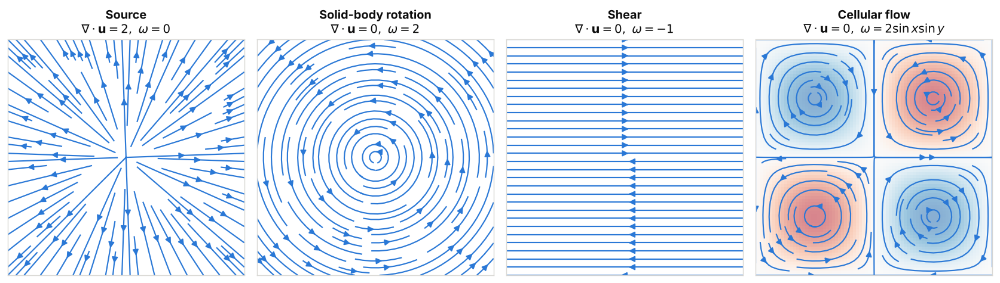
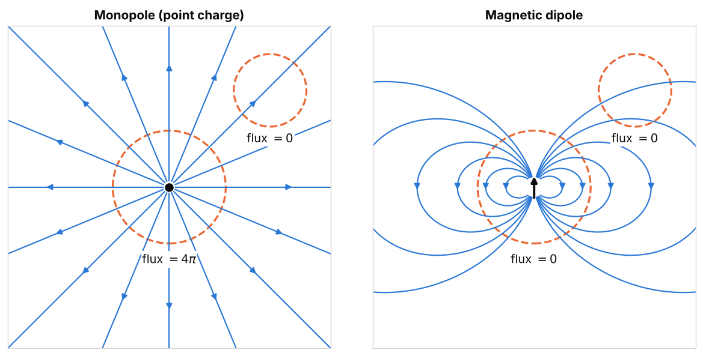
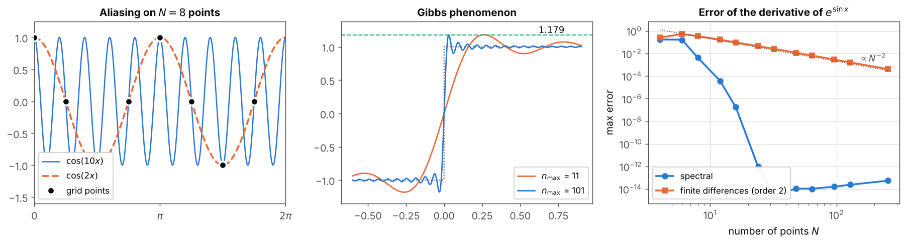
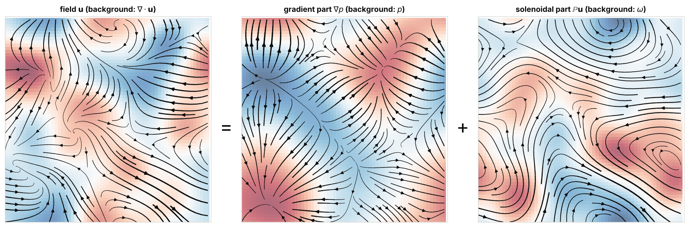
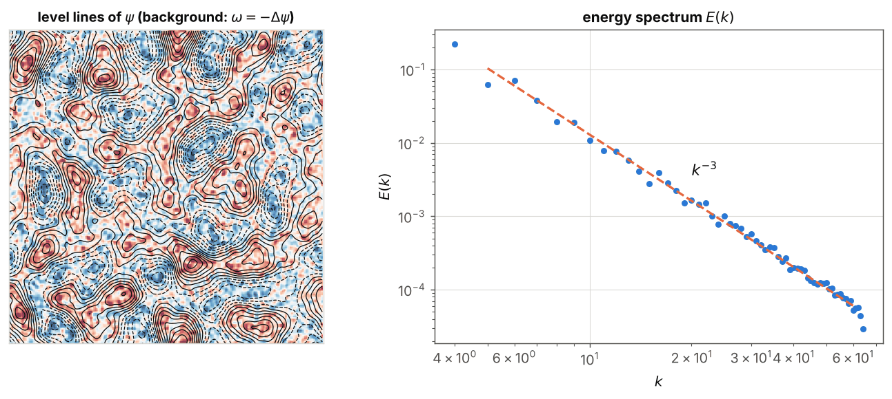

Vector calculus and Fourier analysis
Preparation · level L1 → L2 · ≈ 20 h
Objectives
This module lays down the mathematical tools on which the rest of the pathway rests. By the end of the twenty planned hours of work, you will be able to:
- compute the gradient, divergence, curl and Laplacian of a given field, in Cartesian and then cylindrical coordinates, and interpret each of these operators physically;
- prove the identities \nabla\times(\nabla f) = \mathbf{0}, \nabla\cdot(\nabla\times\mathbf{u}) = 0 and \nabla\times(\nabla\times\mathbf{u}) = \nabla(\nabla\cdot\mathbf{u}) - \Delta\mathbf{u}, as well as the product rules, using the Levi-Civita symbol;
- apply the Green–Ostrogradski and Stokes theorems to compute a flux or a circulation, and explain why \nabla\cdot\mathbf{B} = 0 means that there is no magnetic monopole;
- build a divergence-free field from a stream function (in 2D) or a vector potential (in 3D), and choose the Coulomb gauge;
- compute a Fourier series and a discrete Fourier transform with NumPy, differentiate a periodic field by a spectral method, check Parseval’s identity, and explain aliasing and the 2/3 rule;
- state the Helmholtz–Hodge decomposition, prove it in a periodic box with Fourier series, and program the Leray projection in 2D and 3D;
- explain why projecting onto divergence-free fields becomes a global Poisson problem as soon as the domain has walls.
Prerequisites
The starting point is the level reached at the end of the first year of a science bachelor’s degree (L1). You should be comfortable with derivatives and antiderivatives of functions of one variable, Taylor expansions, single and double integrals over a rectangle, complex numbers and the exponential e^{i\theta}, and the dot and cross products in \mathbb{R}^3.
On the programming side, it is enough to know how to handle NumPy arrays and write a loop and a function in Python. PyTorch is used only for its automatic differentiation (torch.autograd.grad), introduced in Chapter 1.
No other module of the site is required: this one is the first of the pathway. It then serves directly the modules Fluid mechanics and turbulence, Electromagnetism, MHD and the dynamo effect, Deep learning for physics and Generative models under physical constraints.
Work plan
The level indicates the difficulty: 1 for the foundations, 2 for the core of the module, 3 for what already touches on the research questions of the internship. It never goes down from one session to the next.
| Session | Duration | Level | Content | Exercises |
|---|---|---|---|---|
| 1 | 3 h | 1 | Chapter 1, Sections 1.1 to 1.4: fields, partial derivatives, gradient, divergence, curl, Laplacian, index notation | 1, 2 |
| 2 | 2 h | 1 | Chapter 1, Section 1.5: cylindrical coordinates, azimuthal Fourier decomposition | 3 |
| 3 | 3 h | 2 | Chapter 2: vector identities, product rules, induction equation | 4, 5 |
| 4 | 3 h | 2 | Chapter 3: flux, circulation, Green–Ostrogradski and Stokes theorems, meaning of \nabla\cdot\mathbf{B} = 0, energy budget | 6, 7, 8 |
| 5 | 2.5 h | 2 | Chapter 4: stream function, vector potential, Coulomb gauge, poloidal–toroidal decomposition | 9, 10 |
| 6 | 3.5 h | 2 | Chapter 5: Fourier series, DFT, FFT, spectral differentiation, Parseval, aliasing, 2/3 rule | 11, 12, 13 |
| 7 | 3 h | 3 | Chapter 6: Helmholtz–Hodge, Leray projection, walls and the Poisson–Neumann problem | 14, 15 |
| Total | 20 h | 6 chapters | 15 exercises |
Each session ends with the listed exercises, to be done before reading their solutions. The code blocks are short (under 30 seconds each on a laptop): copy them, run them, then modify them.
1. Scalar and vector fields, differential operators
In magnetohydrodynamics (MHD), the state of a conducting fluid is described by two vector fields, the velocity \mathbf{u}(\mathbf{x}, t) and the magnetic field \mathbf{B}(\mathbf{x}, t). Physical laws, like the constraints targeted by the internship (“zero divergence”), are written with four operators: gradient, divergence, curl and Laplacian. This chapter defines them, interprets them, and then expresses them in the two coordinate systems that matter for the internship: Cartesian, for periodic boxes, and cylindrical, for the geometry of dynamo experiments such as VKS (von Kármán Sodium).
1.1 Fields and partial derivatives
Definition 1.1 — Scalar field, vector field, field line Let \Omega \subset \mathbb{R}^d be a domain (d = 2 or 3). A scalar field is a function f : \Omega \to \mathbb{R} (temperature, pressure, stream function). A vector field is a function \mathbf{u} : \Omega \to \mathbb{R}^d that assigns a vector to each point (velocity, magnetic field). A field line of \mathbf{u} is a curve s \mapsto \mathbf{x}(s) tangent to the field at each of its points:
\frac{\mathrm{d}\mathbf{x}}{\mathrm{d}s} = \mathbf{u}(\mathbf{x}(s)).
For a steady velocity field, the field lines are the trajectories of fluid particles; they are then called streamlines.
Definition 1.2 — Partial derivative The partial derivative of f with respect to x at the point (x, y, z) is the derivative of the function of one variable obtained by freezing y and z:
\partial_x f(x, y, z) = \lim_{h \to 0} \frac{f(x + h, y, z) - f(x, y, z)}{h}.
We write \partial_i = \partial / \partial x_i with (x_1, x_2, x_3) = (x, y, z). A function is of class C^k if all its partial derivatives up to order k exist and are continuous.
Theorem 1.3 — Schwarz If f is of class C^2 on an open set, its mixed derivatives are equal: \partial_i \partial_j f = \partial_j \partial_i f for all i, j.
Proof. This is a classical result of second-year analysis, proved in any course on differential calculus; we take it for granted. The idea is to write the “second difference” f(x+h, y+k) - f(x+h, y) - f(x, y+k) + f(x, y) in two ways, applying the mean value theorem twice in one order and then in the other. All the identities of Chapter 2 follow from it. ∎
Example 1.4 — Mixed derivatives For f(x, y) = x^2 y + \sin(xy), we find \partial_x f = 2xy + y\cos(xy) and \partial_y f = x^2 + x\cos(xy). Differentiating the first with respect to y and the second with respect to x, we obtain in both cases 2x + \cos(xy) - xy\sin(xy), as Schwarz’s theorem predicts.
1.2 The gradient
Definition 1.5 — Gradient The gradient of a scalar field f of class C^1 is the vector field
\nabla f = (\partial_x f, \; \partial_y f, \; \partial_z f).
The symbol \nabla (“nabla”) denotes the vector of operators (\partial_x, \partial_y, \partial_z).
Proposition 1.6 — Three readings of the gradient Let f be of class C^1.
For a small displacement \mathbf{h}, we have f(\mathbf{x} + \mathbf{h}) = f(\mathbf{x}) + \nabla f(\mathbf{x})\cdot\mathbf{h} + o(|\mathbf{h}|).
Among all unit directions \mathbf{e}, the directional derivative \nabla f\cdot\mathbf{e} is maximal for \mathbf{e} = \nabla f / |\nabla f|, and this maximum equals |\nabla f|.
Where \nabla f \neq \mathbf{0}, the gradient is orthogonal to the level surfaces \{f = c\}.
Proof. Point (i) is the definition of differentiability, which is guaranteed by the continuity of the partial derivatives (taken for granted). For (ii), the Cauchy–Schwarz inequality gives \nabla f\cdot\mathbf{e} \le |\nabla f|\,|\mathbf{e}| = |\nabla f|, with equality if and only if \mathbf{e} is collinear with \nabla f and points the same way. For (iii), let s \mapsto \mathbf{x}(s) be a curve drawn on the surface \{f = c\}. Then f(\mathbf{x}(s)) = c for all s; differentiating with the chain rule, \nabla f\cdot\mathbf{x}'(s) = 0. The gradient is therefore orthogonal to every vector tangent to the surface. ∎
For example, for f = x^2 + y^2 + z^2, we find \nabla f = 2\mathbf{x}: the level surfaces are spheres centered at the origin and the gradient is radial, hence orthogonal to these spheres.
1.3 Divergence, curl and Laplacian
Definition 1.7 — Divergence, curl, Laplacian For a vector field \mathbf{u} = (u_x, u_y, u_z) of class C^1, the divergence is the scalar field
\nabla\cdot\mathbf{u} = \partial_x u_x + \partial_y u_y + \partial_z u_z,
and the curl is the vector field
\nabla\times\mathbf{u} = \left(\partial_y u_z - \partial_z u_y, \;\; \partial_z u_x - \partial_x u_z, \;\; \partial_x u_y - \partial_y u_x\right).
The Laplacian of a scalar field f of class C^2 is \Delta f = \nabla\cdot(\nabla f) = \partial_x^2 f + \partial_y^2 f + \partial_z^2 f. In Cartesian coordinates only, the Laplacian of a vector field is obtained component by component: \Delta\mathbf{u} = (\Delta u_x, \Delta u_y, \Delta u_z).
A mnemonic: the curl is the formal “cross product” \nabla\times\mathbf{u}, which can be computed as a 3\times 3 determinant whose first row contains the basis vectors, the second the operators \partial_x, \partial_y, \partial_z and the third the components of \mathbf{u}. The curl of the velocity, \boldsymbol\omega = \nabla\times\mathbf{u}, is called the vorticity, and the curl of the magnetic field, \mathbf{j} = \nabla\times\mathbf{B}, the current density (in units where \mu_0 = 1).
Proposition 1.8 — Physical meaning of the three operators (i) Divergence. A small volume \delta V carried by the flow \mathbf{u} evolves according to \frac{\mathrm{d}}{\mathrm{d}t}\delta V = (\nabla\cdot\mathbf{u})\,\delta V to first order. A divergence-free velocity field therefore preserves volumes: it is an incompressible flow.
Curl. For a solid-body rotation with angular velocity vector \boldsymbol\Omega, that is \mathbf{u} = \boldsymbol\Omega\times\mathbf{x}, we have \nabla\times\mathbf{u} = 2\boldsymbol\Omega. The vorticity therefore measures twice the local angular velocity of the fluid.
Laplacian. The average of f over a small sphere of radius \varepsilon centered at \mathbf{x} equals f(\mathbf{x}) + \frac{\varepsilon^2}{2d}\Delta f(\mathbf{x}) + O(\varepsilon^4) in dimension d. The Laplacian measures the difference between the average value in the neighborhood and the value at the point; this is why it describes diffusion, which smooths fields.
Proof.
Sketch. Take a small box with edges \delta x, \delta y, \delta z parallel to the axes. The edge \delta x stretches at the rate u_x(x + \delta x) - u_x(x) \approx \partial_x u_x\,\delta x, and likewise for the other two. Shears deform the box but do not change its volume to first order. Hence \frac{\mathrm{d}}{\mathrm{d}t}(\delta x\,\delta y\,\delta z) \approx (\partial_x u_x + \partial_y u_y + \partial_z u_z)\,\delta x\,\delta y\,\delta z.
Direct computation: \boldsymbol\Omega\times\mathbf{x} = (\Omega_y z - \Omega_z y, \;\Omega_z x - \Omega_x z, \;\Omega_x y - \Omega_y x), so (\nabla\times\mathbf{u})_x = \partial_y(\Omega_x y - \Omega_y x) - \partial_z(\Omega_z x - \Omega_x z) = \Omega_x + \Omega_x = 2\Omega_x, and likewise for the other two components.
We write the Taylor expansion f(\mathbf{x} + \mathbf{h}) = f + \nabla f\cdot\mathbf{h} + \frac12 \sum_{i,j} h_i h_j \partial_i\partial_j f + O(|\mathbf{h}|^3) and average over the sphere |\mathbf{h}| = \varepsilon. By symmetry, the average of h_i is zero and that of h_i h_j is \varepsilon^2\delta_{ij}/d (the d directions play the same role and \sum_i h_i^2 = \varepsilon^2). The cubic term has zero average because it is odd. What remains is f + \frac{\varepsilon^2}{2d}\sum_i \partial_i^2 f + O(\varepsilon^4). ∎
Example 1.9 — Three elementary planar fields The field \mathbf{u} = (x, y, 0) is a source: \nabla\cdot\mathbf{u} = 2 and \nabla\times\mathbf{u} = \mathbf{0}. The field \mathbf{u} = (-y, x, 0) is a solid-body rotation with angular velocity 1 about \mathbf{e}_z: \nabla\cdot\mathbf{u} = 0 and \nabla\times\mathbf{u} = (0, 0, 2). The shear field \mathbf{u} = (y, 0, 0) has straight streamlines, and yet \nabla\times\mathbf{u} = (0, 0, -1): a small paddle wheel placed in this flow rotates (Exercise 2).

Example 1.10 — The ABC flow The ABC (Arnold–Beltrami–Childress) flow, studied in detail by Dombre et al. (1986), is defined on the periodic cube [0, 2\pi)^3 by
\mathbf{u} = \big(A\sin z + C\cos y, \;\; B\sin x + A\cos z, \;\; C\sin y + B\cos x\big).
Each component does not depend on the coordinate of the same name, so \nabla\cdot\mathbf{u} = 0. The first component of the curl is \partial_y u_z - \partial_z u_y = C\cos y + A\sin z = u_x, and an identical computation for the other two gives
\nabla\times\mathbf{u} = \mathbf{u}.
A field collinear with its curl is called a Beltrami field. Its helicity density \mathbf{u}\cdot\boldsymbol\omega = |\mathbf{u}|^2 is everywhere nonnegative, and its average is \langle|\mathbf{u}|^2\rangle = A^2 + B^2 + C^2 (the average of \sin^2 and of \cos^2 over a period is 1/2, that of the cross products is zero). This is the flow used for the kinematic dynamo of experiment E3 in the repository (see the report).
1.4 Index notation
Computations in components quickly become unreadable. Index notation makes them mechanical; it will be the main tool of Chapter 2.
Definition 1.11 — Einstein convention, Kronecker and Levi-Civita symbols In a product, an index repeated twice is summed from 1 to 3: a_i b_i = \sum_{i=1}^3 a_i b_i. The Kronecker symbol \delta_{ij} equals 1 if i = j and 0 otherwise. The Levi-Civita symbol \varepsilon_{ijk} equals +1 if (i, j, k) is an even permutation of (1, 2, 3), -1 if it is odd, and 0 if two indices are equal. With this notation:
(\nabla f)_i = \partial_i f, \qquad \nabla\cdot\mathbf{u} = \partial_i u_i, \qquad (\mathbf{a}\times\mathbf{b})_i = \varepsilon_{ijk} a_j b_k, \qquad (\nabla\times\mathbf{u})_i = \varepsilon_{ijk}\partial_j u_k.
Lemma 1.12 — Contraction of two Levi-Civita symbols For all indices j, k, l, m:
\varepsilon_{ijk}\,\varepsilon_{ilm} = \delta_{jl}\,\delta_{km} - \delta_{jm}\,\delta_{kl}.
Proof. Both sides vanish if j = k or if l = m. Assume j \neq k. In the sum over i, only the index i different from j and k contributes; for \varepsilon_{ilm} to be nonzero, we then need \{l, m\} = \{j, k\}. If (l, m) = (j, k), the left-hand side equals \varepsilon_{ijk}^2 = 1 and the right-hand side 1 - 0 = 1. If (l, m) = (k, j), the left-hand side equals \varepsilon_{ijk}\varepsilon_{ikj} = -1 and the right-hand side 0 - 1 = -1. In all other cases, both sides vanish. ∎
Lemma 1.13 — Antisymmetric against symmetric If S_{jk} = S_{kj} for all j, k, then \varepsilon_{ijk} S_{jk} = 0 for all i.
Proof. The indices j and k are dummy indices; we can rename them: \varepsilon_{ijk}S_{jk} = \varepsilon_{ikj}S_{kj} = -\varepsilon_{ijk}S_{jk}, using the antisymmetry of \varepsilon and then the symmetry of S. A number equal to its negative is zero. ∎
1.5 Cylindrical coordinates
Liquid-metal dynamo experiments take place in cylinders: the VKS experiment is a cylinder in which two counter-rotating impellers stir sodium, and DRESDYN is a precessing cylinder. The SFEMaNS code, used by C. Nore and her collaborators to simulate these flows, works in cylindrical coordinates (r, \theta, z), with a Fourier decomposition in \theta and finite elements in the meridional plane (r, z) (SFEMaNS documentation, see the Sources).
Definition 1.14 — Cylindrical coordinates and basis We set x = r\cos\theta, y = r\sin\theta, z = z with r \ge 0 and \theta \in [0, 2\pi). The local orthonormal basis is
\mathbf{e}_r = (\cos\theta, \sin\theta, 0), \qquad \mathbf{e}_\theta = (-\sin\theta, \cos\theta, 0), \qquad \mathbf{e}_z = (0, 0, 1).
It depends on the point: \partial_\theta\mathbf{e}_r = \mathbf{e}_\theta and \partial_\theta\mathbf{e}_\theta = -\mathbf{e}_r, while the derivatives of the basis vectors with respect to r and z vanish. A field is written \mathbf{u} = u_r\mathbf{e}_r + u_\theta\mathbf{e}_\theta + u_z\mathbf{e}_z. An elementary displacement is \mathrm{d}\mathbf{x} = \mathrm{d}r\,\mathbf{e}_r + r\,\mathrm{d}\theta\,\mathbf{e}_\theta + \mathrm{d}z\,\mathbf{e}_z and the volume element is \mathrm{d}V = r\,\mathrm{d}r\,\mathrm{d}\theta\,\mathrm{d}z.
Proposition 1.15 — Operators in cylindrical coordinates For smooth fields and r > 0:
\nabla f = \partial_r f\,\mathbf{e}_r + \frac{1}{r}\partial_\theta f\,\mathbf{e}_\theta + \partial_z f\,\mathbf{e}_z, \tag{1.1}
\nabla\cdot\mathbf{u} = \frac{1}{r}\partial_r(r u_r) + \frac{1}{r}\partial_\theta u_\theta + \partial_z u_z, \tag{1.2}
\nabla\times\mathbf{u} = \Big(\frac{1}{r}\partial_\theta u_z - \partial_z u_\theta\Big)\mathbf{e}_r + \big(\partial_z u_r - \partial_r u_z\big)\mathbf{e}_\theta + \frac{1}{r}\Big(\partial_r(r u_\theta) - \partial_\theta u_r\Big)\mathbf{e}_z, \tag{1.3}
\Delta f = \frac{1}{r}\partial_r\big(r\,\partial_r f\big) + \frac{1}{r^2}\partial_\theta^2 f + \partial_z^2 f. \tag{1.4}
The vector Laplacian is not the Laplacian of the components:
\Delta\mathbf{u} = \Big(\Delta u_r - \frac{u_r}{r^2} - \frac{2}{r^2}\partial_\theta u_\theta\Big)\mathbf{e}_r + \Big(\Delta u_\theta - \frac{u_\theta}{r^2} + \frac{2}{r^2}\partial_\theta u_r\Big)\mathbf{e}_\theta + \Delta u_z\,\mathbf{e}_z. \tag{1.5}
Proof. For (1.1), we write the differential in two ways: \mathrm{d}f = \partial_r f\,\mathrm{d}r + \partial_\theta f\,\mathrm{d}\theta + \partial_z f\,\mathrm{d}z and \mathrm{d}f = \nabla f\cdot\mathrm{d}\mathbf{x} = (\nabla f)_r\,\mathrm{d}r + (\nabla f)_\theta\,r\,\mathrm{d}\theta + (\nabla f)_z\,\mathrm{d}z. Identifying the two gives (1.1), which can also be read as the operator \nabla = \mathbf{e}_r\partial_r + \mathbf{e}_\theta\frac{1}{r}\partial_\theta + \mathbf{e}_z\partial_z.
For (1.2), we apply this operator to \mathbf{u}, remembering that \partial_\theta also acts on the basis vectors. The only new term comes from \mathbf{e}_\theta\cdot\frac{1}{r}\partial_\theta(u_r\mathbf{e}_r) = \frac{1}{r}u_r\,\mathbf{e}_\theta\cdot\mathbf{e}_\theta + \frac1r\partial_\theta u_r\,\mathbf{e}_\theta\cdot\mathbf{e}_r = \frac{u_r}{r}; the term in u_\theta gives \frac{1}{r}\partial_\theta u_\theta, because \partial_\theta \mathbf{e}_\theta = -\mathbf{e}_r is orthogonal to \mathbf{e}_\theta. In total, \partial_r u_r + \frac{u_r}{r} + \frac{1}{r}\partial_\theta u_\theta + \partial_z u_z, which is (1.2). Formula (1.3) is obtained in the same way with the cross product, and (1.4) by composing (1.2) and (1.1).
For (1.5), note that the Cartesian Laplacian of a vector field is the scalar operator (1.4) applied to the vector-valued function \mathbf{x} \mapsto \mathbf{u}(\mathbf{x}). The basis vectors depend only on \theta, so only the term \frac{1}{r^2}\partial_\theta^2 acts on them:
\partial_\theta^2(u_r\mathbf{e}_r) = (\partial_\theta^2 u_r - u_r)\,\mathbf{e}_r + 2\,\partial_\theta u_r\,\mathbf{e}_\theta, \qquad \partial_\theta^2(u_\theta\mathbf{e}_\theta) = (\partial_\theta^2 u_\theta - u_\theta)\,\mathbf{e}_\theta - 2\,\partial_\theta u_\theta\,\mathbf{e}_r.
Grouping the terms along \mathbf{e}_r and \mathbf{e}_\theta gives (1.5). ∎
Example 1.16 — Solid-body rotation, point vortex, electric wire The solid-body rotation \mathbf{u} = \Omega r\,\mathbf{e}_\theta satisfies \nabla\cdot\mathbf{u} = \frac1r\partial_\theta(\Omega r) = 0 and, by (1.3), \nabla\times\mathbf{u} = \frac{1}{r}\partial_r(\Omega r^2)\,\mathbf{e}_z = 2\Omega\,\mathbf{e}_z, which recovers Proposition 1.8. The point vortex \mathbf{u} = \frac{\Gamma}{2\pi r}\mathbf{e}_\theta, on the contrary, has zero curl for r > 0, since r u_\theta = \Gamma/(2\pi) is constant, even though its streamlines are circles. The magnetic field created by an infinite straight wire carrying a current I, \mathbf{B} = \frac{\mu_0 I}{2\pi r}\mathbf{e}_\theta, has exactly the same structure; we will meet it again in Chapter 3.
Remark 1.17 — Azimuthal Fourier decomposition A function is 2\pi-periodic in \theta; it can therefore be expanded in a Fourier series (Chapter 5): f(r, \theta, z) = \sum_{m\in\mathbb{Z}} f_m(r, z)\,e^{im\theta}, with f_{-m} = \overline{f_m} for a real field. In formulas (1.1) to (1.5), \partial_\theta becomes multiplication by im. For a linear operator whose coefficients do not depend on \theta, each mode m evolves independently of the others and requires only a computation in the meridional plane (r, z). This is the principle of SFEMaNS. The mode m = 0 describes the axisymmetric part of the field; in the VKS simulations of Bousquet et al. (2026), the four dominant POD modes are axisymmetric and an m = 8 signature comes from the eight blades of the impellers.
The code below checks the formulas of this chapter by automatic differentiation: PyTorch computes the exact derivatives (up to rounding) of a programmed function, without finite differences. It is the same mechanism that makes it possible, in “physics-informed” neural networks, to evaluate \nabla\cdot\mathbf{u} at the output of a network.
import torch
torch.set_num_threads(1)
torch.manual_seed(0)
dt = torch.float64
def jacobienne(champ, x):
"""u(x) and J[n, i, j] = du_i/dx_j at the points x (n x 3 array)."""
u = champ(x)
J = torch.stack([torch.autograd.grad(u[:, i].sum(), x, create_graph=True)[0]
for i in range(3)], dim=1)
return u, J
def div_de(J):
return J.diagonal(dim1=1, dim2=2).sum(-1)
def rot_de(J):
return torch.stack([J[:, 2, 1] - J[:, 1, 2],
J[:, 0, 2] - J[:, 2, 0],
J[:, 1, 0] - J[:, 0, 1]], dim=1)
# 1) ABC flow (A, B, C) = (1, 0.8, 0.6)
A, B, C = 1.0, 0.8, 0.6
def abc(x):
X, Y, Z = x[:, 0], x[:, 1], x[:, 2]
return torch.stack([A * torch.sin(Z) + C * torch.cos(Y),
B * torch.sin(X) + A * torch.cos(Z),
C * torch.sin(Y) + B * torch.cos(X)], dim=1)
x = (2 * torch.pi * torch.rand(1000, 3, dtype=dt)).requires_grad_(True)
u, J = jacobienne(abc, x)
print("ABC : max|div u| =", f"{div_de(J).abs().max().item():.1e}",
"; max|rot u - u| =", f"{(rot_de(J) - u).abs().max().item():.1e}")
# 2) Cylindrical formulas against the Cartesian computation
# u = (r z) e_r + (r^2 sin t) e_t + (z cos t) e_z
def champ_cyl(x):
X, Y, Z = x[:, 0], x[:, 1], x[:, 2]
r, t = torch.sqrt(X**2 + Y**2), torch.atan2(Y, X)
ur, ut, uz = r * Z, r**2 * torch.sin(t), Z * torch.cos(t)
return torch.stack([ur * torch.cos(t) - ut * torch.sin(t),
ur * torch.sin(t) + ut * torch.cos(t), uz], dim=1)
y = (torch.rand(1000, 3, dtype=dt) * 2 - 1 + 0.0).requires_grad_(True)
u, J = jacobienne(champ_cyl, y)
X, Y, Z = y[:, 0], y[:, 1], y[:, 2]
r, t = torch.sqrt(X**2 + Y**2), torch.atan2(Y, X)
div_cyl = 2 * Z + r * torch.cos(t) + torch.cos(t) # formula (1.2)
rot_cyl_r = -Z * torch.sin(t) / r # (1/r) d_t u_z - d_z u_t
rot_cyl_t = r # d_z u_r - d_r u_z
rot_cyl_z = 3 * r * torch.sin(t) # (1/r)[d_r(r u_t) - d_t u_r]
w = rot_de(J)
w_r = w[:, 0] * torch.cos(t) + w[:, 1] * torch.sin(t)
w_t = -w[:, 0] * torch.sin(t) + w[:, 1] * torch.cos(t)
print("cylindrical : div gap =", f"{(div_de(J) - div_cyl).abs().max().item():.1e}",
"; curl gap =", f"{max((w_r - rot_cyl_r).abs().max().item(), (w_t - rot_cyl_t).abs().max().item(), (w[:, 2] - rot_cyl_z).abs().max().item()):.1e}")
# output:
# ABC : max|div u| = 0.0e+00 ; max|rot u - u| = 0.0e+00
# cylindrical : div gap = 8.9e-16 ; curl gap = 1.8e-15For the ABC flow, the derivatives of the sines and cosines are computed exactly, hence differences that are exactly zero. For the cylindrical field, the differences of order 10^{-15} are rounding errors: formulas (1.2) and (1.3) are confirmed.
Key takeaways — chapter 1
- The gradient is orthogonal to the level surfaces and points toward the steepest increase; the divergence measures the rate of change of volumes; the vorticity equals twice the local angular velocity; the Laplacian measures the deviation from the local average.
- In index notation: (\nabla\times\mathbf{u})_i = \varepsilon_{ijk}\partial_j u_k, and \varepsilon_{ijk}\varepsilon_{ilm} = \delta_{jl}\delta_{km} - \delta_{jm}\delta_{kl}.
- In cylindrical coordinates, the basis vectors rotate with \theta: hence the terms in u_r/r in the divergence and in u_r/r^2, \partial_\theta u_\theta/r^2 in the vector Laplacian.
- The ABC flow is a Beltrami field (\nabla\times\mathbf{u} = \mathbf{u}), divergence-free, with mean helicity A^2 + B^2 + C^2.
2. Vector identities
Three identities and a handful of product rules make up all the algebra of MHD. They turn Maxwell’s equations and Ohm’s law into the induction equation, show that a curl is automatically divergence-free (this is the principle of the “potential-based” constraints of the internship), and rewrite the nonlinear terms in interpretable forms.
2.1 The three fundamental identities
Theorem 2.1 — The curl of a gradient is zero For every scalar field f of class C^2:
\nabla\times(\nabla f) = \mathbf{0}.
Proof. In index notation, [\nabla\times(\nabla f)]_i = \varepsilon_{ijk}\,\partial_j\partial_k f. By Schwarz’s theorem, S_{jk} = \partial_j\partial_k f is symmetric in (j, k); Lemma 1.13 concludes. ∎
Theorem 2.2 — The divergence of a curl is zero For every vector field \mathbf{u} of class C^2:
\nabla\cdot(\nabla\times\mathbf{u}) = 0.
Proof. We have \nabla\cdot(\nabla\times\mathbf{u}) = \partial_i(\varepsilon_{ijk}\partial_j u_k) = \varepsilon_{ijk}\,\partial_i\partial_j u_k. For each fixed k, \partial_i\partial_j u_k is symmetric in (i, j), whereas \varepsilon_{ijk} is antisymmetric in (i, j): the sum vanishes by the same argument as Lemma 1.13. ∎
Theorem 2.3 — Curl of the curl For every vector field \mathbf{u} of class C^2:
\nabla\times(\nabla\times\mathbf{u}) = \nabla(\nabla\cdot\mathbf{u}) - \Delta\mathbf{u}. \tag{2.1}
Proof. We use the invariance of \varepsilon under cyclic permutation, \varepsilon_{ijk} = \varepsilon_{kij}, and then Lemma 1.12:
[\nabla\times(\nabla\times\mathbf{u})]_i = \varepsilon_{ijk}\,\partial_j\big(\varepsilon_{klm}\partial_l u_m\big) = \varepsilon_{kij}\varepsilon_{klm}\,\partial_j\partial_l u_m = (\delta_{il}\delta_{jm} - \delta_{im}\delta_{jl})\,\partial_j\partial_l u_m.
The first term gives \partial_j\partial_i u_j = \partial_i(\partial_j u_j), the i component of \nabla(\nabla\cdot\mathbf{u}); the second gives -\partial_j\partial_j u_i, the i component of -\Delta\mathbf{u}. ∎
Remark 2.4 — The vector Laplacian outside Cartesian coordinates In curvilinear coordinates, the vector Laplacian is defined by \Delta\mathbf{u} = \nabla(\nabla\cdot\mathbf{u}) - \nabla\times(\nabla\times\mathbf{u}). One can check that this definition gives back formula (1.5) in cylindrical coordinates, which explains the extra terms of that formula.
2.2 Product rules
We write (\mathbf{u}\cdot\nabla)\mathbf{v} for the vector with components u_j\partial_j v_i: it is the derivative of \mathbf{v} in the direction of \mathbf{u}, multiplied by |\mathbf{u}|. The advection term of Navier–Stokes is (\mathbf{u}\cdot\nabla)\mathbf{u}.
Proposition 2.5 — Product rules For scalar fields f, g and vector fields \mathbf{u}, \mathbf{v} of class C^1:
\nabla(fg) = f\,\nabla g + g\,\nabla f;
\nabla\cdot(f\mathbf{u}) = f\,\nabla\cdot\mathbf{u} + \mathbf{u}\cdot\nabla f;
\nabla\times(f\mathbf{u}) = f\,\nabla\times\mathbf{u} + \nabla f\times\mathbf{u};
\nabla\cdot(\mathbf{u}\times\mathbf{v}) = \mathbf{v}\cdot(\nabla\times\mathbf{u}) - \mathbf{u}\cdot(\nabla\times\mathbf{v});
\nabla\times(\mathbf{u}\times\mathbf{v}) = \mathbf{u}\,(\nabla\cdot\mathbf{v}) - \mathbf{v}\,(\nabla\cdot\mathbf{u}) + (\mathbf{v}\cdot\nabla)\mathbf{u} - (\mathbf{u}\cdot\nabla)\mathbf{v};
\nabla(\mathbf{u}\cdot\mathbf{v}) = (\mathbf{u}\cdot\nabla)\mathbf{v} + (\mathbf{v}\cdot\nabla)\mathbf{u} + \mathbf{u}\times(\nabla\times\mathbf{v}) + \mathbf{v}\times(\nabla\times\mathbf{u}).
Proof. All of them rest on the Leibniz rule \partial_i(ab) = a\,\partial_i b + b\,\partial_i a. We prove (b), (d) and (e); (a), (c) and (f) are the subject of Exercise 4.
\partial_i(f u_i) = f\,\partial_i u_i + u_i\,\partial_i f.
With \varepsilon_{ijk} = \varepsilon_{kij} and \varepsilon_{ijk} = -\varepsilon_{jik}:
\partial_i(\varepsilon_{ijk}u_j v_k) = v_k\,\varepsilon_{kij}\partial_i u_j - u_j\,\varepsilon_{jik}\partial_i v_k = \mathbf{v}\cdot(\nabla\times\mathbf{u}) - \mathbf{u}\cdot(\nabla\times\mathbf{v}).
- With Lemma 1.12:
\varepsilon_{ijk}\partial_j(\varepsilon_{klm}u_l v_m) = (\delta_{il}\delta_{jm} - \delta_{im}\delta_{jl})\,\partial_j(u_l v_m) = \partial_j(u_i v_j) - \partial_j(u_j v_i),
and the expansion v_j\partial_j u_i + u_i\partial_j v_j - v_i\partial_j u_j - u_j\partial_j v_i is the stated formula. ∎
Key point — Lamb form of the advection term Taking \mathbf{v} = \mathbf{u} in (f), we obtain \nabla(|\mathbf{u}|^2) = 2(\mathbf{u}\cdot\nabla)\mathbf{u} + 2\,\mathbf{u}\times\boldsymbol\omega, that is
(\mathbf{u}\cdot\nabla)\mathbf{u} = \nabla\Big(\frac{|\mathbf{u}|^2}{2}\Big) - \mathbf{u}\times\boldsymbol\omega. \tag{2.2}
Likewise, with \mathbf{u} = \mathbf{v} = \mathbf{B} and \mathbf{j} = \nabla\times\mathbf{B}, the Lorentz force (in Alfvén units) splits into magnetic tension and a magnetic pressure gradient:
\mathbf{j}\times\mathbf{B} = (\mathbf{B}\cdot\nabla)\mathbf{B} - \nabla\Big(\frac{|\mathbf{B}|^2}{2}\Big). \tag{2.3}
2.3 Application: the induction equation
In a conductor of conductivity \sigma moving at velocity \mathbf{u}, Ohm’s law reads \mathbf{j} = \sigma(\mathbf{E} + \mathbf{u}\times\mathbf{B}). The Maxwell–Faraday equation reads \partial_t\mathbf{B} = -\nabla\times\mathbf{E} and, in the MHD approximation where the displacement current is neglected, the Maxwell–Ampère equation reduces to \nabla\times\mathbf{B} = \mu_0\mathbf{j}. We eliminate \mathbf{E} = \mathbf{j}/\sigma - \mathbf{u}\times\mathbf{B} and \mathbf{j}, with \eta = 1/(\mu_0\sigma) assumed constant:
\partial_t\mathbf{B} = \nabla\times(\mathbf{u}\times\mathbf{B}) - \eta\,\nabla\times(\nabla\times\mathbf{B}).
Proposition 2.6 — Induction equation and conservation of \nabla\cdot\mathbf{B} = 0 If \nabla\cdot\mathbf{B} = 0 and \nabla\cdot\mathbf{u} = 0, the previous equation reads
\partial_t\mathbf{B} = (\mathbf{B}\cdot\nabla)\mathbf{u} - (\mathbf{u}\cdot\nabla)\mathbf{B} + \eta\,\Delta\mathbf{B}. \tag{2.4}
Moreover, for every smooth solution, \partial_t(\nabla\cdot\mathbf{B}) = 0: if the initial field is divergence-free, it remains so.
Proof. Theorem 2.3 with \nabla\cdot\mathbf{B} = 0 gives \nabla\times(\nabla\times\mathbf{B}) = -\Delta\mathbf{B}, and product rule (e) with \nabla\cdot\mathbf{u} = \nabla\cdot\mathbf{B} = 0 gives \nabla\times(\mathbf{u}\times\mathbf{B}) = (\mathbf{B}\cdot\nabla)\mathbf{u} - (\mathbf{u}\cdot\nabla)\mathbf{B}. For the second statement, we take the divergence of the unsimplified equation: the right-hand side is a curl, so its divergence vanishes by Theorem 2.2. ∎
The three terms of (2.4) have a clear physical meaning: (\mathbf{B}\cdot\nabla)\mathbf{u} stretches the field lines (this is the engine of the dynamo effect), -(\mathbf{u}\cdot\nabla)\mathbf{B} transports them, and \eta\Delta\mathbf{B} diffuses them. The ratio of the first two to the third is measured by the magnetic Reynolds number Rm = UL/\eta.
Remark 2.7 — What conservation does not guarantee Proposition 2.6 is a property of the continuous equation. A numerical scheme, and a fortiori a generative model that produces \mathbf{B} directly, does not automatically respect it. Brackbill and Barnes (1980) showed that a nonzero numerical divergence introduces a spurious force parallel to \mathbf{B} that distorts the dynamics; Tóth (2000) compares several methods for controlling \nabla\cdot\mathbf{B} in MHD codes. Chapters 4 and 6 present the two main families of remedies: parametrizing by a potential, or projecting.
Example 2.8 — Check on the ABC flow For the ABC flow, \nabla\times(\nabla\times\mathbf{u}) = \nabla\times\mathbf{u} = \mathbf{u}. On the other hand, \nabla\cdot\mathbf{u} = 0 and each component is a combination of functions such as \sin z or \cos y whose Laplacian is their negative: \Delta\mathbf{u} = -\mathbf{u}. The right-hand side of (2.1) is therefore 0 - (-\mathbf{u}) = \mathbf{u}, in agreement with the left-hand side.
The following code checks the identities and two product rules on “arbitrary” fields: small random neural networks \mathbb{R}^3 \to \mathbb{R}^3. The operators are written as functions that take a field and return a field, which makes it possible to compose them as in mathematics.
import torch
torch.set_num_threads(1)
torch.manual_seed(1)
dt = torch.float64
# Operators by automatic differentiation: each one takes a field (a function of x)
# and returns a new field, which makes it possible to compose them.
def jac(F, x):
u = F(x)
return torch.stack([torch.autograd.grad(u[:, i].sum(), x, create_graph=True)[0]
for i in range(u.shape[1])], dim=1)
def grad(f):
return lambda x: torch.autograd.grad(f(x).sum(), x, create_graph=True)[0]
def div(F):
return lambda x: jac(F, x).diagonal(dim1=1, dim2=2).sum(-1)
def rot(F):
def r(x):
J = jac(F, x)
return torch.stack([J[:, 2, 1] - J[:, 1, 2],
J[:, 0, 2] - J[:, 2, 0],
J[:, 1, 0] - J[:, 0, 1]], dim=1)
return r
def lap_vec(F): # component-by-component Laplacian
return lambda x: torch.stack([div(grad(lambda y, i=i: F(y)[:, i]))(x)
for i in range(3)], dim=1)
# "Arbitrary" fields: small random neural networks (smooth, tanh)
def reseau(d_out):
W1, b1 = torch.randn(3, 32, dtype=dt), torch.randn(32, dtype=dt)
W2 = torch.randn(32, d_out, dtype=dt) / 4
return lambda x: torch.tanh(x @ W1 + b1) @ W2
u, v, f = reseau(3), reseau(3), reseau(1)
f_s = lambda x: f(x)[:, 0]
x = torch.randn(500, 3, dtype=dt).requires_grad_(True)
def ecart(a, b): # max difference (and size of the terms if b is nonzero)
e = f"{(a - b).abs().max().item():.1e}"
return e if b.abs().max() == 0 else e + f" (terms ~ {b.abs().max().item():.1e})"
print("rot grad f :", ecart(rot(grad(f_s))(x), 0 * x),
"; max|grad f| =", f"{grad(f_s)(x).abs().max().item():.1e}")
print("div rot u :", ecart(div(rot(u))(x), 0 * x[:, 0]),
"; max|rot u| =", f"{rot(u)(x).abs().max().item():.1e}")
lhs = rot(rot(u))(x)
rhs = grad(div(u))(x) - lap_vec(u)(x)
print("rot rot u = grad div u - lap u :", ecart(lhs, rhs))
# Product rules
uv = lambda x: torch.linalg.cross(u(x), v(x), dim=1)
lhs = div(uv)(x)
rhs = (v(x) * rot(u)(x)).sum(1) - (u(x) * rot(v)(x)).sum(1)
print("div(u x v) = v.rot u - u.rot v :", ecart(lhs, rhs))
fu = lambda x: f(x) * u(x)
lhs = rot(fu)(x)
rhs = f(x) * rot(u)(x) + torch.linalg.cross(grad(f_s)(x), u(x), dim=1)
print("rot(f u) = f rot u + grad f x u:", ecart(lhs, rhs))
# output:
# rot grad f : 4.4e-16 ; max|grad f| = 1.8e+00
# div rot u : 2.4e-15 ; max|rot u| = 2.5e+00
# rot rot u = grad div u - lap u : 2.7e-15 (terms ~ 7.2e+00)
# div(u x v) = v.rot u - u.rot v : 3.6e-15 (terms ~ 6.6e+00)
# rot(f u) = f rot u + grad f x u: 2.3e-15 (terms ~ 3.9e+00)All the differences are at the level of double-precision rounding (about 10^{-16} times the size of the terms, multiplied by the number of operations). This kind of check is the one used to compute a divergence penalty on the output of a network. Lucor, Agrawal and Sergent (2022) observed, moreover, for physics-informed networks applied to turbulent convection, that it is useful to relax the incompressibility constraint to ease optimization: imposing \nabla\cdot\mathbf{u} = 0 exactly is not always the best learning strategy.
Key takeaways — chapter 2
- \nabla\times\nabla f = \mathbf{0} and \nabla\cdot(\nabla\times\mathbf{u}) = 0 follow from Schwarz’s theorem and the antisymmetry of \varepsilon_{ijk}.
- \nabla\times(\nabla\times\mathbf{u}) = \nabla(\nabla\cdot\mathbf{u}) - \Delta\mathbf{u} follows from the contraction \varepsilon_{kij}\varepsilon_{klm}.
- The product rules are all proved by the Leibniz rule in index notation.
- The induction equation \partial_t\mathbf{B} = \nabla\times(\mathbf{u}\times\mathbf{B}) + \eta\Delta\mathbf{B} preserves \nabla\cdot\mathbf{B} = 0 at the continuous level, but not necessarily after discretization or generation.
3. Flux, circulation and integral theorems
Conservation laws are best read in integral form: what leaves a volume through its surface is what disappears inside it. The local constraint \nabla\cdot\mathbf{B} = 0 is nothing but the infinitesimal version of the statement “the magnetic flux through every closed surface is zero”, and the energy budgets of the internship are obtained with the same theorems.
3.1 Circulation and flux
Definition 3.1 — Circulation Let \mathcal{C} be an oriented curve parametrized by \boldsymbol\gamma : [a, b] \to \mathbb{R}^3. The circulation of \mathbf{u} along \mathcal{C} is
\int_{\mathcal{C}}\mathbf{u}\cdot\mathrm{d}\boldsymbol\ell = \int_a^b \mathbf{u}(\boldsymbol\gamma(s))\cdot\boldsymbol\gamma'(s)\,\mathrm{d}s.
It does not depend on the parametrization, provided the latter respects the orientation. We write \oint for the circulation along a closed curve.
Definition 3.2 — Flux Let S be an oriented surface parametrized by (s, t) \mapsto \mathbf{X}(s, t). The oriented surface element is \mathbf{n}\,\mathrm{d}S = (\partial_s\mathbf{X}\times\partial_t\mathbf{X})\,\mathrm{d}s\,\mathrm{d}t and the flux of \mathbf{u} through S is
\Phi = \iint_S \mathbf{u}\cdot\mathbf{n}\,\mathrm{d}S.
For a closed surface, the outward normal is chosen.
Proposition 3.3 — Circulation of a gradient For f of class C^1 and a curve going from \boldsymbol\gamma(a) to \boldsymbol\gamma(b):
\int_{\mathcal{C}}\nabla f\cdot\mathrm{d}\boldsymbol\ell = f(\boldsymbol\gamma(b)) - f(\boldsymbol\gamma(a)).
In particular, the circulation of a gradient along every closed curve is zero.
Proof. By the chain rule, \frac{\mathrm{d}}{\mathrm{d}s}f(\boldsymbol\gamma(s)) = \nabla f(\boldsymbol\gamma(s))\cdot\boldsymbol\gamma'(s); we integrate from a to b. ∎
3.2 The three integral theorems
Theorem 3.4 — Green (in the plane) Let D \subset \mathbb{R}^2 be a bounded domain whose boundary \partial D is a piecewise smooth closed curve, traversed counterclockwise. For P, Q of class C^1:
\oint_{\partial D}(P\,\mathrm{d}x + Q\,\mathrm{d}y) = \iint_D(\partial_x Q - \partial_y P)\,\mathrm{d}x\,\mathrm{d}y.
Proof. Let us do the proof for a rectangle D = [a, b]\times[c, d]. By the fundamental theorem of calculus,
\iint_D\partial_x Q\,\mathrm{d}x\,\mathrm{d}y = \int_c^d\big[Q(b, y) - Q(a, y)\big]\,\mathrm{d}y,
which is exactly the contribution of Q\,\mathrm{d}y on the right side (traversed upward) and on the left side (traversed downward); the horizontal sides do not contribute because \mathrm{d}y = 0. Likewise, -\iint_D\partial_y P = \int_a^b[P(x, c) - P(x, d)]\,\mathrm{d}x is the contribution of P\,\mathrm{d}x on the bottom (traversed to the right) and the top (traversed to the left). For a general domain, we approximate it by a union of small rectangles: each interior edge is traversed twice in opposite directions and its contribution cancels, leaving only the outer boundary. Making this passage to the limit rigorous requires regularity assumptions on \partial D, which we take for granted. ∎
Theorem 3.5 — Green–Ostrogradski (divergence theorem) Let \Omega \subset \mathbb{R}^3 be a bounded domain with piecewise smooth boundary \partial\Omega and outward normal \mathbf{n}. For \mathbf{u} of class C^1 up to the boundary:
\iiint_\Omega\nabla\cdot\mathbf{u}\,\mathrm{d}V = \oint_{\partial\Omega}\mathbf{u}\cdot\mathbf{n}\,\mathrm{d}S. \tag{3.1}
Proof. For a box [a_1, b_1]\times[a_2, b_2]\times[a_3, b_3], we treat each term of the divergence separately:
\iiint\partial_x u_x\,\mathrm{d}V = \iint\big[u_x(b_1, y, z) - u_x(a_1, y, z)\big]\,\mathrm{d}y\,\mathrm{d}z,
which is the flux of \mathbf{u} through the faces x = b_1 (normal \mathbf{e}_x) and x = a_1 (normal -\mathbf{e}_x). We proceed likewise in y and z and add up. For a general domain, we cut it into small boxes: the flux through an interior face shared by two boxes is counted twice with opposite normals and cancels. As for Theorem 3.4, the full justification of the passage to the limit is taken for granted. ∎
Theorem 3.6 — Stokes Let S be an oriented surface whose boundary \partial S is a closed curve, oriented by the right-hand rule with respect to \mathbf{n}. For \mathbf{u} of class C^1:
\oint_{\partial S}\mathbf{u}\cdot\mathrm{d}\boldsymbol\ell = \iint_S(\nabla\times\mathbf{u})\cdot\mathbf{n}\,\mathrm{d}S. \tag{3.2}
Proof. If S is a planar domain in the plane z = 0, then \mathbf{n} = \mathbf{e}_z and (\nabla\times\mathbf{u})\cdot\mathbf{e}_z = \partial_x u_y - \partial_y u_x: this is Theorem 3.4 with P = u_x and Q = u_y. For a curved surface parametrized by (s, t), both sides are reduced to integrals in the (s, t) plane and Green’s theorem in the plane is applied again; this computation is taken for granted here (see Chapter 4 of Tong’s notes). ∎
These three theorems share the same structure: the integral of a derivative over a domain equals the integral of the function over the boundary of the domain.
Let us apply (3.1) to a small ball B_\varepsilon centered at \mathbf{x}, of volume |B_\varepsilon|. The average of \nabla\cdot\mathbf{u} over this ball tends to \nabla\cdot\mathbf{u}(\mathbf{x}) as \varepsilon \to 0, by continuity, hence
\nabla\cdot\mathbf{u}(\mathbf{x}) = \lim_{\varepsilon\to 0}\frac{1}{|B_\varepsilon|}\oint_{\partial B_\varepsilon}\mathbf{u}\cdot\mathbf{n}\,\mathrm{d}S.
Likewise, (3.2) applied to a small disk D_\varepsilon with normal \mathbf{n} centered at \mathbf{x} gives
(\nabla\times\mathbf{u})(\mathbf{x})\cdot\mathbf{n} = \lim_{\varepsilon\to 0}\frac{1}{\pi\varepsilon^2}\oint_{\partial D_\varepsilon}\mathbf{u}\cdot\mathrm{d}\boldsymbol\ell.
These two formulas involve no coordinate system: the divergence is an outward flux per unit volume, and the normal component of the curl is a circulation per unit area. They also explain the cylindrical formulas of Chapter 1, which are recovered by computing flux and circulation over a small volume element r\,\mathrm{d}r\,\mathrm{d}\theta\,\mathrm{d}z. The following interactive diagram checks this in 2D, where the ball becomes a disk and the flux an integral over a circle.
With the two singular fields of the list, the limit fails as soon as the circle encloses the origin: the circulation of the point vortex stays equal to 2\pi, and so does the flux of the point source, whatever the radius, whereas the vorticity and the divergence vanish everywhere else. The whole “source” is concentrated at the singular point; we will meet this phenomenon again in Example 3.9 and Remark 4.3.
The divergence theorem also provides the integration by parts formulas in any dimension.
Corollary 3.7 — Integration by parts For smooth fields on \Omega:
\int_\Omega f\,\nabla\cdot\mathbf{u}\,\mathrm{d}V = \oint_{\partial\Omega}f\,\mathbf{u}\cdot\mathbf{n}\,\mathrm{d}S - \int_\Omega\mathbf{u}\cdot\nabla f\,\mathrm{d}V, \tag{3.3}
\int_\Omega\mathbf{v}\cdot(\nabla\times\mathbf{u})\,\mathrm{d}V = \int_\Omega\mathbf{u}\cdot(\nabla\times\mathbf{v})\,\mathrm{d}V + \oint_{\partial\Omega}(\mathbf{u}\times\mathbf{v})\cdot\mathbf{n}\,\mathrm{d}S. \tag{3.4}
In a periodic box, the boundary terms vanish, because the contributions of two opposite faces cancel each other (same value of the field, opposite normals).
Proof. We apply (3.1) to f\mathbf{u} with product rule (b), then to \mathbf{u}\times\mathbf{v} with rule (d). ∎
3.3 Meaning of \nabla\cdot\mathbf{B} = 0
Proposition 3.8 — No magnetic monopole For a field \mathbf{B} of class C^1 on an open set U, the following two statements are equivalent:
\nabla\cdot\mathbf{B} = 0 at every point of U;
the flux of \mathbf{B} through every closed surface bounding a domain contained in U is zero.
Proof.
- ⇒ (ii) is Theorem 3.5. For (ii) ⇒ (i), assume \nabla\cdot\mathbf{B}(\mathbf{x}_0) > 0 at some point. By continuity, the divergence stays strictly positive on a small ball centered at \mathbf{x}_0, and Theorem 3.5 gives a strictly positive flux through the sphere that bounds it, which contradicts (ii). The negative case is identical. ∎
Three physical consequences follow. First, the magnetic flux through a surface depends only on the curve that bounds it: two surfaces with the same boundary together form a closed surface, with zero total flux. Next, in a flux tube (a union of field lines resting on a small closed curve), the flux is the same through all cross-sections. Finally, a field line can neither start nor end at a point: there is neither a source nor a sink of magnetic field. The electric field, for its part, satisfies Gauss’s law \nabla\cdot\mathbf{E} = \rho/\varepsilon_0; its sources are the charges. The equation \nabla\cdot\mathbf{B} = 0 expresses the fact that no “magnetic charge” has ever been observed.

Example 3.9 — The straight wire and Ampère’s circuital law For \mathbf{B} = \frac{\mu_0 I}{2\pi r}\mathbf{e}_\theta, formula (1.2) gives \nabla\cdot\mathbf{B} = 0 and formula (1.3) gives \nabla\times\mathbf{B} = \frac{1}{r}\partial_r\big(\frac{\mu_0 I}{2\pi}\big)\mathbf{e}_z = \mathbf{0} for r > 0. Yet the circulation on a circle of radius R centered on the wire equals
\oint\mathbf{B}\cdot\mathrm{d}\boldsymbol\ell = \int_0^{2\pi}\frac{\mu_0 I}{2\pi R}\,R\,\mathrm{d}\theta = \mu_0 I.
There is no contradiction with Stokes’ theorem: every disk bounded by this circle is crossed by the wire, where \nabla\times\mathbf{B} = \mu_0\mathbf{j} is concentrated. Stokes’ theorem applied to \nabla\times\mathbf{B} = \mu_0\mathbf{j} is precisely Ampère’s circuital law: the circulation of \mathbf{B} equals \mu_0 times the enclosed current.
3.4 Magnetic energy budget
The energy budget is one of the physical constraints targeted by the internship offer. Here is how it follows from the tools of this chapter.
Proposition 3.10 — Magnetic energy budget in a periodic box Let \mathbf{B} be a periodic, smooth solution of the induction equation \partial_t\mathbf{B} = \nabla\times(\mathbf{u}\times\mathbf{B}) + \eta\Delta\mathbf{B} with \nabla\cdot\mathbf{B} = 0, and \mathbf{j} = \nabla\times\mathbf{B}. Then
\frac{\mathrm{d}}{\mathrm{d}t}\Big\langle\frac{|\mathbf{B}|^2}{2}\Big\rangle = -\big\langle\mathbf{u}\cdot(\mathbf{j}\times\mathbf{B})\big\rangle - \eta\,\big\langle|\mathbf{j}|^2\big\rangle. \tag{3.5}
Proof. We multiply the equation by \mathbf{B} and average: \frac{\mathrm{d}}{\mathrm{d}t}\langle|\mathbf{B}|^2/2\rangle = \langle\mathbf{B}\cdot\nabla\times(\mathbf{u}\times\mathbf{B})\rangle + \eta\langle\mathbf{B}\cdot\Delta\mathbf{B}\rangle. For the second term, Theorem 2.3 with \nabla\cdot\mathbf{B} = 0 gives \Delta\mathbf{B} = -\nabla\times\mathbf{j}, then (3.4) without boundary term gives \langle\mathbf{B}\cdot\nabla\times\mathbf{j}\rangle = \langle\mathbf{j}\cdot\nabla\times\mathbf{B}\rangle = \langle|\mathbf{j}|^2\rangle. For the first term, (3.4) gives \langle\mathbf{B}\cdot\nabla\times(\mathbf{u}\times\mathbf{B})\rangle = \langle(\mathbf{u}\times\mathbf{B})\cdot\mathbf{j}\rangle, and the scalar triple product satisfies (\mathbf{u}\times\mathbf{B})\cdot\mathbf{j} = \mathbf{u}\cdot(\mathbf{B}\times\mathbf{j}) = -\mathbf{u}\cdot(\mathbf{j}\times\mathbf{B}). ∎
The term -\eta\langle|\mathbf{j}|^2\rangle, always nonpositive, represents Ohmic (Joule) dissipation. The term -\langle\mathbf{u}\cdot(\mathbf{j}\times\mathbf{B})\rangle is minus the work done by the Lorentz force on the fluid: when the fluid works against this force, it gives kinetic energy to the magnetic field. A dynamo is a flow for which this transfer lastingly outweighs the dissipation.
The following code numerically checks the divergence theorem and Stokes’ theorem by quadrature (Gauss–Legendre in \cos\theta, trapezoidal rule in \varphi, a very accurate method for smooth functions on the sphere).
import numpy as np
# Quadrature on a sphere: Gauss-Legendre in cos(theta), trapezoidal rule in phi
def flux_sphere(champ, centre, R, n=64):
mu, w_mu = np.polynomial.legendre.leggauss(n) # mu = cos(theta)
phi = np.linspace(0, 2 * np.pi, 2 * n, endpoint=False)
MU, PHI = np.meshgrid(mu, phi, indexing="ij")
s = np.sqrt(1 - MU**2)
nrm = np.stack([s * np.cos(PHI), s * np.sin(PHI), MU]) # outward normal
X = np.asarray(centre)[:, None, None] + R * nrm
F = champ(X)
dS = R**2 * w_mu[:, None] * (2 * np.pi / (2 * n)) # R^2 dmu dphi
return np.sum((F * nrm).sum(0) * dS)
def coulomb(X): # E = x/|x|^3: "monopole" at 0
return X / np.linalg.norm(X, axis=0)**3
def dipole(X, m=np.array([0.3, -0.2, 1.0])):
r = np.linalg.norm(X, axis=0)
n = X / r
return (3 * np.einsum("i,i...->...", m, n) * n - m[:, None, None]) / r**3
for nom, ch in [("monopole", coulomb), ("dipole ", dipole)]:
print(nom, ": flux(sphere around 0) =", f"{flux_sphere(ch, [0, 0, 0], 1.0):+.12g}",
"; flux(sphere far from 0) =", f"{flux_sphere(ch, [3, 0, 0], 1.0):+.1e}")
print("4 pi =", f"{4 * np.pi:.12g}")
# Stokes: u = (-y^3, x^3, z), rot u = (0, 0, 3x^2 + 3y^2), boundary = unit circle
t = np.linspace(0, 2 * np.pi, 2000, endpoint=False)
x, y = np.cos(t), np.sin(t)
circulation = np.sum(-y**3 * (-np.sin(t)) + x**3 * np.cos(t)) * (2 * np.pi / t.size)
# flux of rot u through the upper hemisphere (same boundary)
mu, w_mu = np.polynomial.legendre.leggauss(64)
mu, w_mu = (mu + 1) / 2, w_mu / 2 # mu in [0, 1]
phi = np.linspace(0, 2 * np.pi, 128, endpoint=False)
MU, PHI = np.meshgrid(mu, phi, indexing="ij")
s = np.sqrt(1 - MU**2)
X, Y, Z = s * np.cos(PHI), s * np.sin(PHI), MU
flux_rot = np.sum(3 * (X**2 + Y**2) * Z * w_mu[:, None]) * (2 * np.pi / 128)
print("circulation =", f"{circulation:.12f}", "; flux of rot u =", f"{flux_rot:.12f}",
"; 3 pi/2 =", f"{1.5 * np.pi:.12f}")
# output:
# monopole : flux(sphere around 0) = +12.5663706144 ; flux(sphere far from 0) = -5.8e-16
# dipole : flux(sphere around 0) = +0 ; flux(sphere far from 0) = -1.4e-16
# 4 pi = 12.5663706144
# circulation = 4.712388980385 ; flux of rot u = 4.712388980385 ; 3 pi/2 = 4.712388980385The Coulomb field \mathbf{x}/|\mathbf{x}|^3 has zero divergence everywhere except at the origin, where it is not defined: its flux equals 4\pi through every sphere that encloses the origin and 0 otherwise (Exercise 6). The field of a dipole, on the other hand, has zero flux in both cases: this is the behavior of a magnetic field. For Stokes’ theorem, the circulation on the unit circle and the flux of the curl through the hemisphere resting on this circle agree to within 10^{-12} with the exact value 3\pi/2.
Key takeaways — chapter 3
- Green–Ostrogradski: \int_\Omega\nabla\cdot\mathbf{u} = \oint_{\partial\Omega}\mathbf{u}\cdot\mathbf{n}; Stokes: \oint_{\partial S}\mathbf{u}\cdot\mathrm{d}\boldsymbol\ell = \iint_S(\nabla\times\mathbf{u})\cdot\mathbf{n}.
- The integration by parts formulas follow; in a periodic box, the boundary terms disappear.
- \nabla\cdot\mathbf{B} = 0 is equivalent to zero flux through every closed surface: no monopole, field lines without endpoints, flux conserved along flux tubes.
- Magnetic energy budget: \frac{\mathrm{d}}{\mathrm{d}t}\langle|\mathbf{B}|^2/2\rangle = -\langle\mathbf{u}\cdot(\mathbf{j}\times\mathbf{B})\rangle - \eta\langle|\mathbf{j}|^2\rangle.
4. Solenoidal fields and potentials
For a generative model to produce divergence-free fields “by construction”, one can have it generate not the field itself, but a potential whose curl is the field: by Theorem 2.2, the constraint is then satisfied exactly, whatever the network produces. This is what FunDiff does in 2D: the decoder produces a stream function \psi and the velocity is obtained from it by differentiation (Wang et al., 2026). This chapter studies these potentials and their limits.
Definition 4.1 — Solenoidal, irrotational, harmonic fields A field \mathbf{u} is solenoidal if \nabla\cdot\mathbf{u} = 0, irrotational if \nabla\times\mathbf{u} = \mathbf{0}, and harmonic if it is both.
Theorems 2.1 and 2.2 say that a gradient is irrotational and that a curl is solenoidal. The converses hold on domains without “holes”, but are false in general.
Theorem 4.2 — Poincaré lemma Let \Omega be a domain that is star-shaped with respect to the origin (for example \mathbb{R}^3, a ball or a convex set containing the origin).
If \nabla\times\mathbf{u} = \mathbf{0} on \Omega, then \mathbf{u} = \nabla f with f(\mathbf{x}) = \int_0^1\mathbf{u}(t\mathbf{x})\cdot\mathbf{x}\,\mathrm{d}t.
If \nabla\cdot\mathbf{B} = 0 on \Omega, then \mathbf{B} = \nabla\times\mathbf{A} with \mathbf{A}(\mathbf{x}) = \int_0^1 t\,\mathbf{B}(t\mathbf{x})\times\mathbf{x}\,\mathrm{d}t.
Proof. Let us prove (i); the proof of (ii) follows the same pattern and is the subject of Exercise 10. Differentiating under the integral sign:
\partial_i f(\mathbf{x}) = \int_0^1\Big[t\,x_j\,(\partial_i u_j)(t\mathbf{x}) + u_i(t\mathbf{x})\Big]\,\mathrm{d}t.
Since the curl vanishes, \partial_i u_j = \partial_j u_i, and x_j(\partial_j u_i)(t\mathbf{x}) = \frac{\mathrm{d}}{\mathrm{d}t}\big[u_i(t\mathbf{x})\big]. The integrand is therefore t\frac{\mathrm{d}}{\mathrm{d}t}u_i(t\mathbf{x}) + u_i(t\mathbf{x}) = \frac{\mathrm{d}}{\mathrm{d}t}\big[t\,u_i(t\mathbf{x})\big], whose integral between 0 and 1 is u_i(\mathbf{x}). Star-shapedness guarantees that the segment [0, \mathbf{x}] stays in \Omega. ∎
Remark 4.3 — Topology matters In the plane minus the origin, which is not star-shaped, the field \mathbf{u} = (-y, x)/(x^2 + y^2) = \mathbf{e}_\theta/r is irrotational, but its circulation on the unit circle equals 2\pi: it is the gradient of no function (Proposition 3.3). Its “potential” would be the angle \theta, which is not a continuous function on the whole domain. In a periodic box (a torus), a constant field \mathbf{U} \neq \mathbf{0} is harmonic, but it is neither the gradient of a periodic function nor the curl of a periodic potential, because the average of a derivative of a periodic function is zero. Mean fields must therefore be handled separately; we will come back to this point in Chapter 6.
4.1 Stream function in 2D
Definition 4.4 — Stream function In 2D, a function \psi(x, y) is associated with the field (convention of the site’s notation)
\mathbf{u} = \nabla^\perp\psi = (\partial_y\psi, \; -\partial_x\psi).
The 2D vorticity is the scalar \omega = \partial_x u_y - \partial_y u_x, the component along \mathbf{e}_z of \nabla\times\mathbf{u}.
Proposition 4.5 — Properties of the stream function For \psi of class C^2 and \mathbf{u} = \nabla^\perp\psi:
\nabla\cdot\mathbf{u} = 0;
\omega = -\Delta\psi;
\mathbf{u}\cdot\nabla\psi = 0: \psi is constant along the streamlines, which are therefore its level lines;
the flow rate of \mathbf{u} through a curve going from \mathbf{a} to \mathbf{b} (normal obtained by rotating the tangent a quarter turn to the right) equals \psi(\mathbf{b}) - \psi(\mathbf{a});
conversely, on a star-shaped domain, every divergence-free 2D field can be written \nabla^\perp\psi. The result remains true on every simply connected domain, which we take for granted.
Proof.
- \partial_x\partial_y\psi - \partial_y\partial_x\psi = 0 by Schwarz. (ii) \omega = \partial_x(-\partial_x\psi) - \partial_y(\partial_y\psi) = -\Delta\psi. (iii) \partial_y\psi\,\partial_x\psi - \partial_x\psi\,\partial_y\psi = 0. (iv) For a curve \boldsymbol\gamma(s), the unnormalized normal is (\gamma_y', -\gamma_x') and \mathbf{u}\cdot(\gamma_y', -\gamma_x') = \partial_y\psi\,\gamma_y' + \partial_x\psi\,\gamma_x' = \frac{\mathrm{d}}{\mathrm{d}s}\psi(\boldsymbol\gamma(s)); we integrate. (v) The rotated field \mathbf{v} = (-u_y, u_x) has vorticity \partial_x u_x + \partial_y u_y = \nabla\cdot\mathbf{u} = 0; by Theorem 4.2 (i) in 2D, \mathbf{v} = \nabla g, hence u_x = \partial_y g and u_y = -\partial_x g: we take \psi = g. ∎
Example 4.6 — Cellular flow For \psi = \sin x\sin y on [0, 2\pi)^2, we obtain \mathbf{u} = (\sin x\cos y, \; -\cos x\sin y) and \omega = -\Delta\psi = 2\sin x\sin y = 2\psi. The streamlines are the curves \sin x\sin y = \text{const}: closed cells of side \pi, rotating alternately in one direction and the other. This flow is the 2D analogue of the Taylor–Green flow.
In 2D MHD, one likewise writes \mathbf{B} = \nabla^\perp a with a scalar magnetic potential a, and the current density is j = -\Delta a. Generating \psi and a instead of \mathbf{u} and \mathbf{B} is one of the five constraint mechanisms compared in experiment E2 of the repository (see the report).
4.2 Vector potential in 3D and gauge
Definition 4.7 — Vector potential, gauge A vector potential of \mathbf{B} is a field \mathbf{A} such that \mathbf{B} = \nabla\times\mathbf{A}. It is not unique: for every function \chi, \mathbf{A}' = \mathbf{A} + \nabla\chi gives the same \mathbf{B} (Theorem 2.1). The choice of a representative is called a gauge choice. The Coulomb gauge imposes \nabla\cdot\mathbf{A} = 0.
Proposition 4.8 — Coulomb gauge One can always reduce to the Coulomb gauge by solving the Poisson equation \Delta\chi = -\nabla\cdot\mathbf{A}. In the Coulomb gauge, the potential satisfies
-\Delta\mathbf{A} = \nabla\times\mathbf{B} = \mathbf{j}. \tag{4.1}
In a periodic box, for a field \mathbf{B} with zero mean, the solution is written in Fourier space (Chapter 5) as \hat{\mathbf{A}}_{\mathbf{k}} = i\,\mathbf{k}\times\hat{\mathbf{B}}_{\mathbf{k}}/|\mathbf{k}|^2 for \mathbf{k} \neq \mathbf{0}.
Proof. If \Delta\chi = -\nabla\cdot\mathbf{A}, then \nabla\cdot(\mathbf{A} + \nabla\chi) = \nabla\cdot\mathbf{A} + \Delta\chi = 0. In the Coulomb gauge, Theorem 2.3 gives \nabla\times\mathbf{B} = \nabla\times(\nabla\times\mathbf{A}) = \nabla(\nabla\cdot\mathbf{A}) - \Delta\mathbf{A} = -\Delta\mathbf{A}. In Fourier space, \nabla\times becomes i\mathbf{k}\times and -\Delta becomes |\mathbf{k}|^2 (Chapter 5), hence |\mathbf{k}|^2\hat{\mathbf{A}}_{\mathbf{k}} = i\mathbf{k}\times\hat{\mathbf{B}}_{\mathbf{k}}. ∎
Example 4.9 — Uniform field and ABC flow For \mathbf{B} = B_0\mathbf{e}_z, the symmetric potential \mathbf{A} = \frac{B_0}{2}(-y, x, 0) is in the Coulomb gauge, and the Landau potential \mathbf{A}' = (0, B_0 x, 0) also works. Their difference \mathbf{A}' - \mathbf{A} = \frac{B_0}{2}(y, x, 0) is indeed a gradient, that of \chi = B_0 xy/2. For the ABC flow, since \nabla\times\mathbf{u} = \mathbf{u} and \nabla\cdot\mathbf{u} = 0, the field \mathbf{u} is its own vector potential in the Coulomb gauge.
Proposition 4.10 — Gauge invariance of magnetic helicity In a periodic box, if \nabla\cdot\mathbf{B} = 0, the magnetic helicity H_M = \langle\mathbf{A}\cdot\mathbf{B}\rangle does not depend on the gauge: it does not change when \mathbf{A} is replaced by \mathbf{A} + \nabla\chi, for every periodic function \chi.
Proof. By (3.3) without boundary term, \langle(\mathbf{A} + \nabla\chi)\cdot\mathbf{B}\rangle = \langle\mathbf{A}\cdot\mathbf{B}\rangle + \langle\nabla\chi\cdot\mathbf{B}\rangle = \langle\mathbf{A}\cdot\mathbf{B}\rangle - \langle\chi\,\nabla\cdot\mathbf{B}\rangle = \langle\mathbf{A}\cdot\mathbf{B}\rangle. ∎
Magnetic helicity measures the linking of field lines; it is one of the metrics cited in the internship offer. Without periodicity conditions, the argument brings out a boundary term \oint\chi\,\mathbf{B}\cdot\mathbf{n}, and invariance requires \mathbf{B}\cdot\mathbf{n} = 0 on the boundary. Exercise 15 checks Proposition 4.10 numerically.
4.3 Poloidal–toroidal decomposition
In 3D, a solenoidal field has three components linked by one equation: it carries only two scalar degrees of freedom. The poloidal–toroidal decomposition makes this remark explicit. Let us start with the axisymmetric case, which can be proved entirely.
Proposition 4.11 — Axisymmetric fields In cylindrical coordinates, for any smooth functions A_\theta(r, z) and B_\theta(r, z), the field
\mathbf{B} = \underbrace{\nabla\times\big(A_\theta\,\mathbf{e}_\theta\big)}_{\text{poloidal}} + \underbrace{B_\theta\,\mathbf{e}_\theta}_{\text{toroidal}}, \qquad \nabla\times\big(A_\theta\,\mathbf{e}_\theta\big) = -\partial_z A_\theta\,\mathbf{e}_r + \frac{1}{r}\partial_r(rA_\theta)\,\mathbf{e}_z,
is divergence-free. Conversely, in a domain whose meridional cross-section is star-shaped (a solid or hollow cylinder, for example), every smooth divergence-free axisymmetric field can be written in this way, and the poloidal field lines lie in the surfaces rA_\theta = \text{const}.
Proof. The computation of \nabla\times(A_\theta\mathbf{e}_\theta) follows from (1.3). By (1.2), the toroidal part has divergence \frac1r\partial_\theta B_\theta = 0 and the poloidal part
\frac{1}{r}\partial_r\big(-r\,\partial_z A_\theta\big) + \partial_z\Big(\frac{1}{r}\partial_r(rA_\theta)\Big) = \frac{1}{r}\Big[-\partial_r\partial_z(rA_\theta) + \partial_z\partial_r(rA_\theta)\Big] = 0.
For the converse, \nabla\cdot\mathbf{B} = 0 reads \partial_r(rB_r) + \partial_z(rB_z) = 0: the planar field (rB_z, -rB_r) in the meridional half-plane (r, z) is irrotational in the 2D sense, so (Theorem 4.2, applied in the star-shaped meridional cross-section) there exists \Psi(r, z) with \partial_r\Psi = rB_z and \partial_z\Psi = -rB_r. We set A_\theta = \Psi/r. If the domain contains the axis, then \partial_z\Psi = 0 on the axis; we then choose the constant so that \Psi = 0 on the axis, so that \Psi \approx r^2 B_z/2 near the axis and A_\theta remains smooth at r = 0. Finally, \mathbf{B}_{\text{pol}}\cdot\nabla\Psi = B_r\,rB_z + B_z(-rB_r) = 0: \Psi = rA_\theta is constant along the poloidal lines, exactly like the stream function in 2D. ∎
Theorem 4.12 — Poloidal–toroidal decomposition (statement) In a ball or a spherical shell, every smooth divergence-free field can be written
\mathbf{B} = \nabla\times(T\,\mathbf{x}) + \nabla\times\nabla\times(P\,\mathbf{x}),
with two scalar functions T (toroidal) and P (poloidal), unique if their average over each centered sphere is required to vanish. In a plane layer or a periodic box, \mathbf{x} is replaced by \mathbf{e}_z, provided the average of \mathbf{B} over horizontal planes is added: it depends only on z, and its vertical component is even constant (because \nabla\cdot\mathbf{B} = 0).
Proof. Taken for granted; see Backus (1986) for a complete proof and Moffatt and Dormy (2019) for its use in dynamo theory. Let us only note that each term is a curl, hence divergence-free, and that \nabla\times(T\mathbf{x}) = \nabla T\times\mathbf{x} is orthogonal to \mathbf{x}: the toroidal field lines are tangent to the centered spheres. ∎
The Earth’s magnetic dipole is a poloidal field; a differential rotation shears a poloidal field and creates a toroidal field (the “omega effect”). In the VKS simulations, the dynamo obtained with soft-iron impellers is an essentially axisymmetric axial dipole (Nore et al., 2016): its dominant part, the mode m = 0, is therefore covered by Proposition 4.11.
The following code checks by automatic differentiation that a field built from a stream function (2D) or a vector potential (3D) is solenoidal, even when the potential is a random neural network, and that a gauge change does not modify \mathbf{B}.
import torch
torch.set_num_threads(1)
torch.manual_seed(2)
dt = torch.float64
def d(f, x): # gradient of a scalar function evaluated at x (n x d)
return torch.autograd.grad(f.sum(), x, create_graph=True)[0]
def reseau(d_in, d_out):
W1, b1 = torch.randn(d_in, 64, dtype=dt), torch.randn(64, dtype=dt)
W2 = torch.randn(64, d_out, dtype=dt) / 8
return lambda x: torch.tanh(x @ W1 + b1) @ W2
# --- 2D: stream function psi, u = (d_y psi, -d_x psi)
psi = reseau(2, 1)
x = torch.randn(2000, 2, dtype=dt).requires_grad_(True)
p = psi(x)[:, 0]
gp = d(p, x)
ux, uy = gp[:, 1], -gp[:, 0]
div_u = d(ux, x)[:, 0] + d(uy, x)[:, 1]
omega = d(uy, x)[:, 0] - d(ux, x)[:, 1]
lap_psi = d(gp[:, 0], x)[:, 0] + d(gp[:, 1], x)[:, 1]
print("2D : max|div u| =", f"{div_u.abs().max().item():.1e}",
"; max|u| =", f"{torch.hypot(ux, uy).max().item():.2f}",
"; max|omega + lap psi| =", f"{(omega + lap_psi).abs().max().item():.1e}")
# psi is constant along the streamlines: u . grad psi = 0
print("2D : max|u . grad psi| =", f"{(ux * gp[:, 0] + uy * gp[:, 1]).abs().max().item():.1e}")
# --- 3D: vector potential A, B = rot A; gauge change A' = A + grad chi
A, chi = reseau(3, 3), reseau(3, 1)
y = torch.randn(2000, 3, dtype=dt).requires_grad_(True)
def rot(F):
J = torch.stack([d(F[:, i], y) for i in range(3)], dim=1) # J[n,i,j] = dF_i/dx_j
return torch.stack([J[:, 2, 1] - J[:, 1, 2], J[:, 0, 2] - J[:, 2, 0],
J[:, 1, 0] - J[:, 0, 1]], dim=1)
Av = A(y)
Bv = rot(Av)
div_B = sum(d(Bv[:, i], y)[:, i] for i in range(3))
B2 = rot(Av + d(chi(y)[:, 0], y))
print("3D : max|div B| =", f"{div_B.abs().max().item():.1e}",
"; max|B| =", f"{Bv.norm(dim=1).max().item():.2f}",
"; max|B(A + grad chi) - B(A)| =", f"{(B2 - Bv).abs().max().item():.1e}")
# output:
# 2D : max|div u| = 4.4e-16 ; max|u| = 1.47 ; max|omega + lap psi| = 0.0e+00
# 2D : max|u . grad psi| = 0.0e+00
# 3D : max|div B| = 1.3e-15 ; max|B| = 2.30 ; max|B(A + grad chi) - B(A)| = 5.6e-16The constraint is satisfied to machine precision, without any training: this is what is called a hard constraint by construction. The price to pay is twofold. The output of the network must be differentiated, which amplifies its small-scale errors (an error of size \epsilon at scale \ell on \psi becomes an error of size \epsilon/\ell on \mathbf{u}). And the mean field and, in 3D, the gauge must be handled separately.
Key takeaways — chapter 4
- On a star-shaped domain, irrotational is equivalent to gradient and solenoidal is equivalent to curl; on a domain with holes or a periodic domain, topology and mean fields must be taken into account.
- In 2D, \mathbf{u} = \nabla^\perp\psi = (\partial_y\psi, -\partial_x\psi) is solenoidal, \omega = -\Delta\psi, and \psi is constant along the streamlines.
- In 3D, \mathbf{B} = \nabla\times\mathbf{A}; the Coulomb gauge \nabla\cdot\mathbf{A} = 0 gives -\Delta\mathbf{A} = \mathbf{j}; the helicity \langle\mathbf{A}\cdot\mathbf{B}\rangle is gauge invariant in the periodic case.
- A 3D solenoidal field is described by two scalars (poloidal and toroidal); in the axisymmetric case, \mathbf{B} = \nabla\times(A_\theta\mathbf{e}_\theta) + B_\theta\mathbf{e}_\theta.
5. Fourier series, discrete Fourier transform and FFT
In a periodic box, the Fourier basis turns derivatives into multiplications: \partial_x becomes ik. This is the framework of pseudo-spectral dynamo simulations, such as the LATU code, which uses a pseudo-spectral Fourier method on a regular Cartesian grid (Kreuzahler et al., 2017). It is also in Fourier space that the energy spectrum, the first of the metrics cited in the internship offer, is defined.
5.1 Fourier series
Definition 5.1 — Fourier coefficients and series Let f be an L-periodic function, integrable over one period. We write k_n = 2\pi n/L for n \in \mathbb{Z}. The Fourier coefficients of f are
\hat f_n = \frac{1}{L}\int_0^L f(x)\,e^{-ik_n x}\,\mathrm{d}x,
and its Fourier series is \sum_{n\in\mathbb{Z}}\hat f_n\,e^{ik_n x}. If f is real, \hat f_{-n} = \overline{\hat f_n}.
Proposition 5.2 — Orthonormality For all integers n, m:
\frac{1}{L}\int_0^L e^{ik_n x}\,e^{-ik_m x}\,\mathrm{d}x = \delta_{nm}.
Proof. If n = m, the integrand equals 1. Otherwise, it is e^{2i\pi(n-m)x/L}, an antiderivative of which, \frac{L}{2i\pi(n-m)}e^{2i\pi(n-m)x/L}, takes the same value at 0 and at L. ∎
Theorem 5.3 — Convergence (statement) (i) If \int_0^L|f|^2 < \infty, the partial sums S_N f = \sum_{|n|\le N}\hat f_n e^{ik_n x} converge to f in mean square.
If f is continuous, periodic and piecewise C^1, the convergence is uniform.
If f is piecewise C^1 with jumps, S_N f(x) converges at each point to \frac12[f(x^+) + f(x^-)], but near a jump the partial sums overshoot the limit value by about 9% of the height of the jump, whatever N: this is the Gibbs phenomenon.
Proof. Taken for granted; see for example Canuto et al. (2006). The Gibbs overshoot is measured in the code below. ∎
Proposition 5.4 — Differentiation and decay of the coefficients If f is periodic of class C^1, then \widehat{(f')}_n = ik_n\hat f_n. By induction, if f is of class C^p, then
|\hat f_n| \le \Big(\frac{L}{2\pi|n|}\Big)^p\max|f^{(p)}| \qquad (n \neq 0).
The smoother a function, the faster its Fourier coefficients decay.
Proof. An integration by parts gives \frac1L\int_0^L f'e^{-ik_n x} = \frac1L\big[f e^{-ik_n x}\big]_0^L + ik_n\frac1L\int_0^L f e^{-ik_n x}; the bracket vanishes by periodicity. Iterating, \hat f_n = \widehat{(f^{(p)})}_n/(ik_n)^p, and |\widehat{(f^{(p)})}_n| \le \max|f^{(p)}|. ∎
Theorem 5.5 — Parseval For f square integrable:
\frac{1}{L}\int_0^L|f(x)|^2\,\mathrm{d}x = \sum_{n\in\mathbb{Z}}|\hat f_n|^2. \tag{5.1}
Proof. For a trigonometric polynomial f = \sum_{|n|\le N}\hat f_n e^{ik_n x}, we expand |f|^2 = f\bar f = \sum_{n,m}\hat f_n\overline{\hat f_m}e^{i(k_n - k_m)x} and Proposition 5.2 leaves only the terms n = m. The general case follows by density of trigonometric polynomials (taken for granted). ∎
Physically, (5.1) says that the mean energy is the sum of the energies of the modes: this is what makes it possible to distribute the energy by scale.
Example 5.6 — The square wave Let f(x) = \operatorname{sign}(\sin x) on [0, 2\pi). The computation gives \hat f_n = \frac{2}{i\pi n} for odd n and 0 for even n, that is
f(x) = \frac{4}{\pi}\sum_{n\ \text{odd}\ \ge 1}\frac{\sin(nx)}{n}.
The coefficients decay only like 1/n, because of the jumps. The limit of the maximum of the partial sums is \frac{2}{\pi}\int_0^\pi\frac{\sin t}{t}\,\mathrm{d}t \approx 1.1790: the overshoot of 0.179 is about 9% of the jump, which equals 2.
5.2 Discrete Fourier transform
On a computer, f is known only at N equally spaced points x_j = jL/N, j = 0, \dots, N-1. The integral is replaced by a sum.
Definition 5.7 — Discrete Fourier transform (DFT) The discrete coefficients and the inversion formula are
\hat f_n = \frac{1}{N}\sum_{j=0}^{N-1}f_j\,e^{-2i\pi jn/N}, \qquad f_j = \sum_{n}\hat f_n\,e^{2i\pi jn/N},
where n runs over N consecutive integers, for example -N/2, \dots, N/2-1 for even N. With NumPy, np.fft.fft(f) returns N\hat f_n (without the factor 1/N), np.fft.ifft contains the factor 1/N, and the wavenumbers k_n are obtained with 2*np.pi*np.fft.fftfreq(N, d=L/N), in the order 0, 1, \dots, N/2-1, -N/2, \dots, -1.
Proposition 5.8 — Discrete orthogonality and discrete Parseval For all integers n, m:
\sum_{j=0}^{N-1}e^{2i\pi j(n-m)/N} = \begin{cases} N & \text{if } n \equiv m \pmod N, \\ 0 & \text{otherwise.}\end{cases}
Consequently, the inversion formula is exact and \frac{1}{N}\sum_j|f_j|^2 = \sum_n|\hat f_n|^2, the sum running over N consecutive integers.
Proof. If n \not\equiv m, the sum is geometric with ratio q = e^{2i\pi(n-m)/N} \neq 1 and equals (1 - q^N)/(1 - q) = 0 since q^N = 1. Otherwise each term equals 1. Inversion and Parseval follow as in the continuous case. ∎
Proposition 5.9 — Aliasing On the grid, the modes n and n + N are indistinguishable: e^{ik_{n+N}x_j} = e^{ik_n x_j}. If the Fourier series of f converges absolutely, the discrete coefficient is the sum of the “folded” continuous coefficients:
\hat f_n^{\,\text{DFT}} = \sum_{p\in\mathbb{Z}}\hat f_{n + pN}. \tag{5.2}
Proof. e^{2i\pi(n+N)j/N} = e^{2i\pi nj/N}e^{2i\pi j} = e^{2i\pi nj/N}. For (5.2), we replace f_j by its Fourier series in the definition of the DFT and apply Proposition 5.8: only the modes congruent to n modulo N survive. ∎
The largest representable wavenumber is therefore |n| = N/2, the Nyquist wavenumber: at least two points per wavelength are needed. A finer mode is not lost, it is mistaken for a coarser mode: \cos(10x) sampled on N = 8 points coincides with \cos(2x).
5.3 The fast Fourier transform (FFT)
Computing the N coefficients from the definition costs N^2 operations. The Cooley–Tukey algorithm (1965) reduces this cost to O(N\log N).
Theorem 5.10 — Even–odd splitting (Cooley–Tukey) Let N be even, w = e^{-2i\pi/N} and F_n = \sum_{j=0}^{N-1}f_j w^{jn}. Let E_n and O_n denote the (unnormalized) DFTs of size N/2 of the samples with even and odd indices. Then, for n = 0, \dots, N/2 - 1:
F_n = E_n + w^n O_n, \qquad F_{n + N/2} = E_n - w^n O_n.
Proof. We separate j = 2m and j = 2m+1: F_n = \sum_m f_{2m}(w^2)^{mn} + w^n\sum_m f_{2m+1}(w^2)^{mn}. Now w^2 = e^{-2i\pi/(N/2)} is the root of unity of order N/2: the two sums are E_n and O_n. The latter are N/2-periodic in n and w^{N/2} = -1, which gives the second formula. ∎
If C(N) is the cost for a size N = 2^q, then C(N) = 2C(N/2) + O(N), hence C(N) = O(N\log_2 N). For a 3D grid of 256^3 = 2^{24} points, the ratio between N^2 \approx 2.8\times 10^{14} and N\log_2 N \approx 4.0\times 10^{8} is about 7\times 10^5: without the FFT, spectral methods would be unusable. Multiple dimensions are handled axis by axis (np.fft.fftn).
5.4 Spectral differentiation
Definition 5.11 — Spectral derivative The spectral derivative of (f_j) is the vector
(D_N f)_j = \sum_{n}ik_n\,\hat f_n\,e^{ik_n x_j},
that is, the exact derivative of the trigonometric polynomial that interpolates f at the grid points. For even N, ik_{N/2} is replaced by 0: the Nyquist mode \cos(\frac{N}{2}x) has a derivative -\frac N2\sin(\frac N2 x) that vanishes on the grid, and keeping it would give a non-real derivative (Trefethen, 2000).
Proposition 5.12 — Accuracy of the spectral derivative If \sum_n|k_n\hat f_n| converges, the error at the grid points satisfies
\max_j\big|(D_N f)_j - f'(x_j)\big| \le 2\sum_{|n|\ge N/2}|k_n|\,|\hat f_n|.
If |\hat f_n| = O(|n|^{-q}) with q > 2, the error is therefore O(N^{2-q}); if f is analytic, the coefficients decay exponentially and so does the error (spectral convergence).
Proof. Sketch. f'(x_j) = \sum_m ik_m\hat f_m e^{ik_m x_j}, while D_N f uses the folded coefficients (5.2) multiplied by ik_n with |n| < N/2. The difference consists of the modes |m| \ge N/2 of f', whose sum is bounded by \sum_{|m|\ge N/2}|k_m||\hat f_m|, and of the folded terms ik_n\hat f_{n+pN} with p \neq 0, where |k_n| < |k_{n+pN}|: their sum is bounded by the same quantity. The Nyquist mode set to zero falls under the same count. ∎
The code below compares the spectral derivative with second-order centered finite differences for f = e^{\sin x}, an analytic function, then checks Parseval and measures the Gibbs phenomenon.
import numpy as np
def nombres_onde(N, L=2 * np.pi):
"""k_n = 2 pi n / L in the np.fft order (0, 1, ..., N/2-1, -N/2, ..., -1)."""
return 2 * np.pi * np.fft.fftfreq(N, d=L / N)
def derivee_spectrale(f, L=2 * np.pi):
N = f.size
k = nombres_onde(N, L)
if N % 2 == 0:
k[N // 2] = 0.0 # Nyquist mode: odd derivative set to zero
return np.real(np.fft.ifft(1j * k * np.fft.fft(f)))
def derivee_df2(f, L=2 * np.pi): # second-order centered finite differences
h = L / f.size
return (np.roll(f, -1) - np.roll(f, 1)) / (2 * h)
print(" N spectral error FD order 2 error")
for N in [8, 16, 32, 64, 128]:
x = 2 * np.pi * np.arange(N) / N
f, fp = np.exp(np.sin(x)), np.cos(x) * np.exp(np.sin(x))
e_s = np.abs(derivee_spectrale(f) - fp).max()
e_d = np.abs(derivee_df2(f) - fp).max()
print(f"{N:3d} {e_s:.1e} {e_d:.1e}")
# Discrete Parseval: (1/N) sum |f_j|^2 = sum |f^_k|^2 with f^_k = fft(f)/N
N = 64
x = 2 * np.pi * np.arange(N) / N
f = np.exp(np.sin(x))
fh = np.fft.fft(f) / N
print("Parseval :", f"{np.mean(f**2):.15f}", f"{np.sum(np.abs(fh)**2):.15f}")
# Gibbs: partial sums of the square wave sign(sin x) = (4/pi) sum_{n odd} sin(n x)/n
xx = np.linspace(1e-4, np.pi / 2, 200001)
for n_max in [11, 101, 1001]:
S = sum(4 / np.pi * np.sin(n * xx) / n for n in range(1, n_max + 1, 2))
print(f"n_max = {n_max:4d} : max of the partial sum = {S.max():.4f}")
# output:
# N spectral error FD order 2 error
# 8 4.3e-03 3.4e-01
# 16 1.8e-07 9.4e-02
# 32 2.9e-15 2.6e-02
# 64 1.1e-14 6.5e-03
# 128 2.4e-14 1.6e-03
# Parseval : 2.279585302336067 2.279585302336067
# n_max = 11 : max of the partial sum = 1.1813
# n_max = 101 : max of the partial sum = 1.1790
# n_max = 1001 : max of the partial sum = 1.1790With 32 points, the spectral derivative reaches machine precision, whereas second-order finite differences still make an error of a few percent and gain only a factor of 4 each time N doubles. The slight rise of the spectral error beyond N = 32 is due to rounding, which grows like N\epsilon_{\text{machine}} because the wavenumbers multiply the errors. The maximum of the partial sums of the square wave settles at 1.1790: the Gibbs overshoot does not disappear when modes are added, it only becomes narrower against the jump.

5.5 Fourier in several dimensions and energy spectrum
In a periodic box [0, L)^3, the wave vectors are \mathbf{k} \in \frac{2\pi}{L}\mathbb{Z}^3 and a field is written \mathbf{u}(\mathbf{x}) = \sum_{\mathbf{k}}\hat{\mathbf{u}}_{\mathbf{k}}e^{i\mathbf{k}\cdot\mathbf{x}}. The operators become algebraic:
\widehat{\nabla f} = i\mathbf{k}\hat f, \qquad \widehat{\nabla\cdot\mathbf{u}} = i\mathbf{k}\cdot\hat{\mathbf{u}}, \qquad \widehat{\nabla\times\mathbf{u}} = i\mathbf{k}\times\hat{\mathbf{u}}, \qquad \widehat{\Delta f} = -|\mathbf{k}|^2\hat f.
The identities of Chapter 2 become identities between vectors: \mathbf{k}\times\mathbf{k} = \mathbf{0}, \mathbf{k}\cdot(\mathbf{k}\times\hat{\mathbf{u}}) = 0, and i\mathbf{k}\times(i\mathbf{k}\times\hat{\mathbf{u}}) = -\mathbf{k}(\mathbf{k}\cdot\hat{\mathbf{u}}) + |\mathbf{k}|^2\hat{\mathbf{u}}, which is nothing but the vector triple product formula \mathbf{a}\times(\mathbf{b}\times\mathbf{c}) = \mathbf{b}(\mathbf{a}\cdot\mathbf{c}) - \mathbf{c}(\mathbf{a}\cdot\mathbf{b}).
Definition 5.13 — Energy and helicity spectra For L = 2\pi, the shell energy spectrum is
E(K) = \frac{1}{2}\sum_{K - 1/2 \,\le\, |\mathbf{k}| \,<\, K + 1/2}|\hat{\mathbf{u}}_{\mathbf{k}}|^2, \qquad K = 0, 1, 2, \dots
By Parseval, \sum_K E(K) = \frac12\langle|\mathbf{u}|^2\rangle (provided all the shells are counted). The kinetic helicity spectrum is defined in the same way with \operatorname{Re}\big(\overline{\hat{\mathbf{u}}_{\mathbf{k}}}\cdot\hat{\boldsymbol\omega}_{\mathbf{k}}\big) in place of \frac12|\hat{\mathbf{u}}_{\mathbf{k}}|^2.
Remark 5.14 — Discrete consistency On a grid, the identities \nabla\cdot(\nabla\times\mathbf{u}) = 0 or \nabla\times(\nabla\times\mathbf{u}) = \nabla(\nabla\cdot\mathbf{u}) - \Delta\mathbf{u} are exact (up to rounding) only if all the operators use the same wavenumbers. With the Nyquist convention of Definition 5.11, the Laplacian must therefore be computed as -|\mathbf{k}|^2 with these same modified \mathbf{k}; otherwise the identity is false on the Nyquist modes.
import numpy as np
rng = np.random.default_rng(4)
N, L = 32, 2 * np.pi
kv = 2 * np.pi * np.fft.fftfreq(N, d=L / N) # true wavenumbers
filtre = np.exp(-sum(k**2 for k in np.meshgrid(kv, kv, kv, indexing="ij")) / 16)
k1 = kv.copy(); k1[N // 2] = 0.0 # Nyquist set to zero (odd derivatives)
KX, KY, KZ = np.meshgrid(k1, k1, k1, indexing="ij")
K = np.stack([KX, KY, KZ]) # wave vector, shape (3, N, N, N)
K2 = (K**2).sum(0) # |k|^2 consistent with this choice
F = lambda a: np.fft.fftn(a, axes=(-3, -2, -1))
Fi = lambda a: np.real(np.fft.ifftn(a, axes=(-3, -2, -1)))
grad = lambda f: Fi(1j * K * F(f))
div = lambda u: Fi((1j * K * F(u)).sum(0))
def rot(u):
uh = F(u)
return Fi(1j * np.stack([K[1]*uh[2] - K[2]*uh[1],
K[2]*uh[0] - K[0]*uh[2],
K[0]*uh[1] - K[1]*uh[0]]))
lap = lambda u: Fi(-K2 * F(u))
def lisse(shape): # filtered white noise, then normalized
a = Fi(F(rng.normal(size=shape)) * filtre)
return a / a.std()
u, f = lisse((3, N, N, N)), lisse((N, N, N))
print("max|rot grad f| =", f"{np.abs(rot(grad(f))).max():.1e}", " (max|grad f| =", f"{np.abs(grad(f)).max():.1e})")
print("max|div rot u| =", f"{np.abs(div(rot(u))).max():.1e}", " (max|rot u| =", f"{np.abs(rot(u)).max():.1e})")
e = rot(rot(u)) - (grad(div(u)) - lap(u))
print("max|rot rot u - (grad div u - lap u)| =", f"{np.abs(e).max():.1e}")
# Parseval in 3D: <|u|^2> = sum_k |u^_k|^2 with u^_k = fft(u)/N^3
uh = F(u) / N**3
print("Parseval : <|u|^2> =", f"{np.mean((u**2).sum(0)):.12f}", "; sum|u^_k|^2 =", f"{np.sum(np.abs(uh)**2):.12f}")
# ABC flow: shell energy spectrum and kinetic helicity
x = L * np.arange(N) / N
X, Y, Z = np.meshgrid(x, x, x, indexing="ij")
A, B, C = 1.0, 0.8, 0.6
v = np.stack([A*np.sin(Z) + C*np.cos(Y), B*np.sin(X) + A*np.cos(Z), C*np.sin(Y) + B*np.cos(X)])
vh = F(v) / N**3
kn = np.sqrt(K2)
E = [0.5 * np.sum(np.abs(vh)**2 * ((kn >= s - 0.5) & (kn < s + 0.5))) for s in range(4)]
print("spectrum E(k), k = 0..3 :", np.round(E, 12), "; (A^2+B^2+C^2)/2 =", (A*A + B*B + C*C) / 2)
print("helicity <u . rot u> =", f"{np.mean((v * rot(v)).sum(0)):.12f}", "; A^2+B^2+C^2 =", A*A + B*B + C*C)
# output:
# max|rot grad f| = 2.8e-14 (max|grad f| = 1.0e+01)
# max|div rot u| = 4.5e-14 (max|rot u| = 1.2e+01)
# max|rot rot u - (grad div u - lap u)| = 5.6e-14
# Parseval : <|u|^2> = 3.007055058030 ; sum|u^_k|^2 = 3.007055058030
# spectrum E(k), k = 0..3 : [0. 1. 0. 0.] ; (A^2+B^2+C^2)/2 = 1.0
# helicity <u . rot u> = 2.000000000000 ; A^2+B^2+C^2 = 2.0The identities are satisfied to within about 10^{-15} relative to the size of the terms. All the energy of the ABC flow lies in the shell K = 1, and its mean helicity is indeed A^2 + B^2 + C^2 = 2.
5.6 Products, aliasing and the 2/3 rule
Nonlinear terms, such as (\mathbf{u}\cdot\nabla)\mathbf{u} or \nabla\times(\mathbf{u}\times\mathbf{B}), are computed in pseudo-spectral codes by pointwise multiplication on the grid, which costs only O(N) operations after the FFTs. But a product widens the spectrum.
Proposition 5.15 — Spectrum of a product The Fourier coefficients of a product are the convolution of the coefficients: \widehat{(uv)}_n = \sum_{p + q = n}\hat u_p\hat v_q. If u and v have only modes |n| \le K, their product has modes up to |n| = 2K.
Proof. We expand uv = \sum_{p,q}\hat u_p\hat v_q e^{i(k_p + k_q)x} and group the terms according to n = p + q. ∎
Theorem 5.16 — The 2/3 rule (Orszag, 1971) If \hat u and \hat v are truncated at |n| \le K with N \ge 3K + 1, then the DFT coefficients of the product computed on the grid coincide, for |n| \le K, with the exact coefficients of uv.
Proof. By (5.2), the DFT coefficient of the product equals \sum_p\widehat{(uv)}_{n + pN}. The exact product has only modes |m| \le 2K. For |n| \le K and p \neq 0, we have |n + pN| \ge N - |n| \ge N - K \ge 2K + 1: all the folded terms vanish. ∎
In practice, the fields are kept truncated at |n| \le N/3 by setting the modes |n| > N/3 to zero after each product, so that the factors of the next product are truncated too: only the central two thirds of the spectrum are kept, hence the name of the rule. The following code shows aliasing and then its elimination.
import numpy as np
rng = np.random.default_rng(3)
# 1) Aliasing: cos(10 x) sampled on N = 8 points coincides with cos(2 x)
N = 8
x = 2 * np.pi * np.arange(N) / N
print("max|cos(10x) - cos(2x)| on the grid N=8 :", f"{np.abs(np.cos(10*x) - np.cos(2*x)).max():.1e}")
# 2) Product u*u computed "pseudo-spectrally" on a grid of N points
N = 32
k = np.fft.fftfreq(N, d=1 / N) # integers 0..15, -16..-1
def champ_aleatoire(K):
"""Real field whose modes satisfy 1 <= |k| <= K."""
uh = np.zeros(N, complex)
for n in range(1, K + 1):
c = rng.normal() + 1j * rng.normal()
uh[n], uh[-n] = c, np.conj(c)
return uh # coefficients (fft/N convention)
def produit_exact(uh, vh):
"""Exact coefficients of u*v for |k| < N/2: direct discrete convolution."""
wh = np.zeros(N, complex)
for p in range(N):
for q in range(N):
s = k[p] + k[q]
if abs(s) < N / 2:
wh[int(s) % N] += uh[p] * vh[q]
return wh
def produit_grille(uh, vh): # pointwise product
u, v = np.fft.ifft(uh * N), np.fft.ifft(vh * N)
return np.fft.fft(u * v) / N
uh = champ_aleatoire(15) # all modes resolved
err = np.abs(produit_grille(uh, uh) - produit_exact(uh, uh))
print("no precaution : max error on the coefficients of u^2 =", f"{err.max():.2f}",
"(size of the coefficients ~", f"{np.abs(produit_exact(uh, uh)).max():.1f})")
K = N // 3 # 2/3 rule: |k| <= 10
garde = np.abs(k) <= K
uh2 = uh * garde # truncate u before the product
err = np.abs((produit_grille(uh2, uh2) - produit_exact(uh2, uh2))[garde])
print("2/3 rule : max error on the modes |k| <= 10 =", f"{err.max():.1e}")
# output:
# max|cos(10x) - cos(2x)| on the grid N=8 : 3.5e-15
# no precaution : max error on the coefficients of u^2 = 12.50 (size of the coefficients ~ 77.5)
# 2/3 rule : max error on the modes |k| <= 10 = 1.1e-14Without precaution, the aliased modes pollute the coefficients of the product with an error that reaches about 16% of the largest coefficient; with truncation to two thirds, the error drops to rounding. In a simulation, this aliasing injects spurious energy at small scales and can make the computation blow up.
Remark 5.17 — Discontinuities and filtering The Gibbs phenomenon is a problem as soon as the coefficients of the problem are discontinuous. In the LATU code, the VKS impellers are represented by penalization in a periodic box, with a magnetic permeability that jumps at their surface; to limit the Gibbs oscillations, Kreuzahler et al. (2017) filter these jumps with a sharpened raised cosine filter.
Key takeaways — chapter 5
- In Fourier space, \partial_x \to ik, \nabla \to i\mathbf{k}, \Delta \to -|\mathbf{k}|^2; Parseval identifies the mean energy with the sum of the modal energies, hence the spectrum E(K).
- The smoothness of a function can be read in the decay of its coefficients; the spectral derivative converges exponentially for an analytic function.
- On N points, the modes n and n + N are confused (aliasing); the Nyquist mode requires a consistent convention for all derivatives.
- The FFT costs O(N\log N); products double the width of the spectrum, and the 2/3 rule (N \ge 3K + 1) eliminates the aliasing of quadratic terms.
6. Helmholtz–Hodge decomposition and Leray projection
A field produced by a numerical scheme or by a generative network generally has a small nonzero divergence. The Helmholtz–Hodge theorem states that every field decomposes uniquely into a gradient part and a solenoidal part; keeping only the latter is called projecting. In a periodic box, this projection costs two FFTs (forward and backward) and a small matrix–vector multiplication per wave vector. With walls, it requires solving a global elliptic problem. This contrast lies at the heart of the modeling choices of the internship.
6.1 General statement
Theorem 6.1 — Helmholtz–Hodge in a bounded domain (statement) Let \Omega \subset \mathbb{R}^d be a bounded, connected domain with smooth boundary and outward normal \mathbf{n}. Every square-integrable field \mathbf{u} on \Omega decomposes uniquely as
\mathbf{u} = \mathbf{w} + \nabla p, \qquad \nabla\cdot\mathbf{w} = 0 \text{ in } \Omega, \qquad \mathbf{w}\cdot\mathbf{n} = 0 \text{ on } \partial\Omega,
where p is defined up to a constant. The two parts are orthogonal in L^2(\Omega): \int_\Omega\mathbf{w}\cdot\nabla p\,\mathrm{d}V = 0. The potential p solves the Neumann problem
\Delta p = \nabla\cdot\mathbf{u} \ \text{ in } \Omega, \qquad \partial_n p = \mathbf{u}\cdot\mathbf{n} \ \text{ on } \partial\Omega. \tag{6.1}
Proof. Let us prove orthogonality and uniqueness; existence relies on solving (6.1), which is taken for granted here (see Chorin and Marsden, 1993, or Girault and Raviart, 1986). By (3.3), \int_\Omega\mathbf{w}\cdot\nabla p = \oint_{\partial\Omega}p\,\mathbf{w}\cdot\mathbf{n} - \int_\Omega p\,\nabla\cdot\mathbf{w} = 0. If \mathbf{w}_1 + \nabla p_1 = \mathbf{w}_2 + \nabla p_2, the field \mathbf{w}_1 - \mathbf{w}_2 = \nabla(p_2 - p_1) is both solenoidal with zero normal flux and a gradient: it is orthogonal to itself, hence zero. Finally, taking the divergence and the normal component of \mathbf{u} = \mathbf{w} + \nabla p gives (6.1). ∎
Proposition 6.2 — Compatibility of the Neumann problem The problem \Delta p = f in \Omega, \partial_n p = g on \partial\Omega can have a solution only if \int_\Omega f\,\mathrm{d}V = \oint_{\partial\Omega}g\,\mathrm{d}S, and two solutions differ by a constant. For (6.1), the condition is automatically satisfied.
Proof. The necessary condition is Theorem 3.5 applied to \nabla p. For (6.1), it is again Theorem 3.5, applied to \mathbf{u}. If q is the difference of two solutions, \Delta q = 0 and \partial_n q = 0, and Green’s identity gives \int_\Omega|\nabla q|^2 = \oint_{\partial\Omega}q\,\partial_n q - \int_\Omega q\,\Delta q = 0, so q is constant on the connected domain. ∎
Proposition 6.3 — The projection is the minimal correction Write \mathbf{w} = \mathbb{P}\mathbf{u} for the solenoidal part. For every solenoidal field \mathbf{v} satisfying \mathbf{v}\cdot\mathbf{n} = 0 on the boundary:
\|\mathbf{u} - \mathbb{P}\mathbf{u}\|_{L^2} \le \|\mathbf{u} - \mathbf{v}\|_{L^2}.
Proof. \mathbf{u} - \mathbf{v} = \nabla p + (\mathbf{w} - \mathbf{v}), and \mathbf{w} - \mathbf{v} is solenoidal with zero normal flux, hence orthogonal to \nabla p. By Pythagoras, \|\mathbf{u} - \mathbf{v}\|^2 = \|\nabla p\|^2 + \|\mathbf{w} - \mathbf{v}\|^2 \ge \|\nabla p\|^2 = \|\mathbf{u} - \mathbf{w}\|^2. ∎
Projecting a generated field therefore amounts to modifying it as little as possible, in the energy sense, to satisfy the constraint. This does not guarantee that the projected field is physically plausible: the removed gradient part may contain useful information, and the projection may modify the statistics (spectrum, helicity) of the generated field.
6.2 Proof in a periodic box
On the periodic torus \mathbb{T}^d = [0, L)^d, there is no boundary, and Fourier diagonalizes everything.
Theorem 6.4 — Helmholtz–Hodge on the torus Every real square-integrable field \mathbf{u} on \mathbb{T}^d decomposes uniquely as
\mathbf{u} = \bar{\mathbf{u}} + \nabla p + \mathbf{w},
where \bar{\mathbf{u}} = \langle\mathbf{u}\rangle is constant, p is periodic with zero mean, and \mathbf{w} is periodic, solenoidal and with zero mean. The three parts are pairwise orthogonal. In Fourier space, for \mathbf{k} \neq \mathbf{0}:
\hat p_{\mathbf{k}} = -i\,\frac{\mathbf{k}\cdot\hat{\mathbf{u}}_{\mathbf{k}}}{|\mathbf{k}|^2}, \qquad \hat{\mathbf{w}}_{\mathbf{k}} = \hat{\mathbf{u}}_{\mathbf{k}} - \mathbf{k}\,\frac{\mathbf{k}\cdot\hat{\mathbf{u}}_{\mathbf{k}}}{|\mathbf{k}|^2} = \Big(I - \frac{\mathbf{k}\mathbf{k}^{\mathsf{T}}}{|\mathbf{k}|^2}\Big)\hat{\mathbf{u}}_{\mathbf{k}}. \tag{6.2}
Proof. Existence. We define \hat p_{\mathbf{k}} and \hat{\mathbf{w}}_{\mathbf{k}} by (6.2) for \mathbf{k} \neq \mathbf{0}, and \hat p_{\mathbf{0}} = 0, \hat{\mathbf{w}}_{\mathbf{0}} = \mathbf{0}. Then \widehat{\nabla p}_{\mathbf{k}} = i\mathbf{k}\hat p_{\mathbf{k}} = \mathbf{k}(\mathbf{k}\cdot\hat{\mathbf{u}}_{\mathbf{k}})/|\mathbf{k}|^2, so that \hat{\mathbf{u}}_{\mathbf{k}} = \widehat{\nabla p}_{\mathbf{k}} + \hat{\mathbf{w}}_{\mathbf{k}} for \mathbf{k}\neq\mathbf{0}, and \hat{\mathbf{u}}_{\mathbf{0}} = \bar{\mathbf{u}}. We check that i\mathbf{k}\cdot\hat{\mathbf{w}}_{\mathbf{k}} = i\big(\mathbf{k}\cdot\hat{\mathbf{u}}_{\mathbf{k}} - |\mathbf{k}|^2\,\mathbf{k}\cdot\hat{\mathbf{u}}_{\mathbf{k}}/|\mathbf{k}|^2\big) = 0. Since \mathbf{u} is real, \hat{\mathbf{u}}_{-\mathbf{k}} = \overline{\hat{\mathbf{u}}_{\mathbf{k}}}. The matrix I - \mathbf{k}\mathbf{k}^{\mathsf{T}}/|\mathbf{k}|^2 is real and even in \mathbf{k}, so \hat{\mathbf{w}}_{-\mathbf{k}} = \overline{\hat{\mathbf{w}}_{\mathbf{k}}} and \mathbf{w} is real. For p, the factor \mathbf{k} changes sign with \mathbf{k} and the factor -i changes sign under conjugation: \hat p_{-\mathbf{k}} = \overline{\hat p_{\mathbf{k}}}, and p is real as well. Finally, |\hat{\mathbf{w}}_{\mathbf{k}}| \le |\hat{\mathbf{u}}_{\mathbf{k}}| and |\mathbf{k}\hat p_{\mathbf{k}}| \le |\hat{\mathbf{u}}_{\mathbf{k}}|, so that the series converge in L^2.
Orthogonality. By Parseval (in its polarized form \langle\mathbf{a}\cdot\mathbf{b}\rangle = \sum_{\mathbf{k}}\overline{\hat{\mathbf{a}}_{\mathbf{k}}}\cdot\hat{\mathbf{b}}_{\mathbf{k}} for real fields),
\langle\nabla p\cdot\mathbf{w}\rangle = \sum_{\mathbf{k}}\overline{i\mathbf{k}\hat p_{\mathbf{k}}}\cdot\hat{\mathbf{w}}_{\mathbf{k}} = \sum_{\mathbf{k}}(-i)\,\overline{\hat p_{\mathbf{k}}}\,(\mathbf{k}\cdot\hat{\mathbf{w}}_{\mathbf{k}}) = 0.
The constant field is orthogonal to the other two, which have zero mean.
Uniqueness. Consider a decomposition of zero, \bar{\mathbf{v}} + \nabla q + \mathbf{z} = \mathbf{0}. The mode \mathbf{k} = \mathbf{0} gives \bar{\mathbf{v}} = \mathbf{0}. For \mathbf{k} \neq \mathbf{0}, the dot product with \mathbf{k} gives i|\mathbf{k}|^2\hat q_{\mathbf{k}} + \mathbf{k}\cdot\hat{\mathbf{z}}_{\mathbf{k}} = i|\mathbf{k}|^2\hat q_{\mathbf{k}} = 0, hence \hat q_{\mathbf{k}} = 0, and then \hat{\mathbf{z}}_{\mathbf{k}} = \mathbf{0}. ∎
Definition 6.5 — Leray projector The Leray projector, named after the mathematician who introduced weak solutions of the Navier–Stokes equations (Leray, 1934), is the operator \mathbb{P} that acts in Fourier space by \widehat{(\mathbb{P}\mathbf{u})}_{\mathbf{k}} = P(\mathbf{k})\,\hat{\mathbf{u}}_{\mathbf{k}}, with
P_{ij}(\mathbf{k}) = \delta_{ij} - \frac{k_i k_j}{|\mathbf{k}|^2} \quad (\mathbf{k} \neq \mathbf{0}), \qquad P(\mathbf{0}) = I.
With this convention, \mathbb{P} preserves the mean field and removes the gradient part.
Proposition 6.6 — Properties of the Leray projector on the torus (i) \mathbb{P}^2 = \mathbb{P}; (ii) \mathbb{P} is symmetric: \langle\mathbb{P}\mathbf{u}\cdot\mathbf{v}\rangle = \langle\mathbf{u}\cdot\mathbb{P}\mathbf{v}\rangle; (iii) \langle|\mathbb{P}\mathbf{u}|^2\rangle \le \langle|\mathbf{u}|^2\rangle; (iv) \nabla\cdot\mathbb{P}\mathbf{u} = 0; (v) \mathbb{P} commutes with derivatives and with the Laplacian; (vi) \mathbb{P}(\nabla f) = \mathbf{0} and \mathbb{P}(\nabla\times\mathbf{A}) = \nabla\times\mathbf{A}.
Proof. For real nonzero \mathbf{k}, P(\mathbf{k}) is the matrix of the orthogonal projection onto the plane orthogonal to \mathbf{k}: P(\mathbf{k})^2 = P(\mathbf{k}) and P(\mathbf{k})^{\mathsf{T}} = P(\mathbf{k}). With Parseval, we obtain (i), (ii) and (iii). (iv): \mathbf{k}\cdot P(\mathbf{k})\hat{\mathbf{u}} = 0. (v): derivatives act in Fourier space by multiplication by scalars or vectors; for the divergence and the curl, one checks directly that \mathbf{k}\cdot P(\mathbf{k}) = \mathbf{0} and that \mathbf{k}\times P(\mathbf{k})\hat{\mathbf{u}} = \mathbf{k}\times\hat{\mathbf{u}}; the Laplacian is a scalar multiplier. (vi): P(\mathbf{k})\mathbf{k} = \mathbf{0}, and \mathbf{k}\times\hat{\mathbf{A}} is already orthogonal to \mathbf{k}. ∎
For an isotropic random field (white noise, for example), each coefficient \hat{\mathbf{u}}_{\mathbf{k}} has the same variance in the d directions and the projection removes one of them: on average, a fraction (d-1)/d of the energy is kept, that is 1/2 in 2D and 2/3 in 3D. In 2D, the projection can also be written with the stream function: \mathbb{P}\mathbf{u} = \bar{\mathbf{u}} + \nabla^\perp\psi with -\Delta\psi = \omega, where \omega is the vorticity of \mathbf{u} (Exercise 14).

Remark 6.7 — “Zero divergence” depends on the discrete operator On a grid, \mathbb{P}\mathbf{u} computed by FFT has zero divergence to machine precision if the divergence is measured with the same wavenumbers (including the Nyquist convention). Measured by finite differences, the divergence of the same field is only O(h^2), where h is the grid spacing. A “divergence control” metric is therefore meaningful only if the discrete operator used is specified. With the Nyquist convention, the few modes all of whose modified wavenumbers vanish (the mean mode, but also the “pure” Nyquist modes, such as (N/2, 0) or (N/2, N/2) in 2D) are left untouched by the formula of Definition 6.5; one may prefer to set them to zero, as in Exercise 14.
The following code projects white noises in 2D and 3D and checks the properties of Proposition 6.6.
import numpy as np
rng = np.random.default_rng(5)
def vecteurs_onde(N, d, L=2 * np.pi):
k1 = 2 * np.pi * np.fft.fftfreq(N, d=L / N)
k1[N // 2] = 0.0 # same convention as for the derivatives
return np.stack(np.meshgrid(*([k1] * d), indexing="ij"))
def leray(u, K):
"""Leray projection: u^_k <- u^_k - k (k . u^_k)/|k|^2 (mode k = 0 kept)."""
ax = tuple(range(1, u.ndim))
uh = np.fft.fftn(u, axes=ax)
K2 = (K**2).sum(0)
K2[K2 == 0] = 1.0 # avoids 0/0; k.u^ = 0 at these points anyway
uh = uh - K * (K * uh).sum(0) / K2
return np.real(np.fft.ifftn(uh, axes=ax))
def divergence(u, K):
ax = tuple(range(1, u.ndim))
return np.real(np.fft.ifftn((1j * K * np.fft.fftn(u, axes=ax)).sum(0)))
for d, N in [(2, 256), (3, 64)]:
K = vecteurs_onde(N, d)
u = rng.normal(size=(d,) + (N,) * d) # white noise: very far from solenoidal
w = leray(u, K)
g = u - w # gradient part
a, b = divergence(u, K).std(), np.abs(divergence(w, K)).max()
print(f"d = {d}, N = {N} : rms div u = {a:.1e} -> max|div Pu| = {b:.1e} "
f"(ratio {b / a:.1e})")
print(f" ||P(Pu) - Pu||max = {np.abs(leray(w, K) - w).max():.1e} ; "
f"<Pu . (u - Pu)> = {np.mean((w * g).sum(0)):.1e} ; "
f"energy kept = {np.mean((w**2).sum(0)) / np.mean((u**2).sum(0)):.3f}")
# output:
# d = 2, N = 256 : rms div u = 1.0e+02 -> max|div Pu| = 9.5e-14 (ratio 9.1e-16)
# ||P(Pu) - Pu||max = 8.9e-16 ; <Pu . (u - Pu)> = -3.7e-17 ; energy kept = 0.499
# d = 3, N = 64 : rms div u = 3.1e+01 -> max|div Pu| = 3.6e-14 (ratio 1.2e-15)
# ||P(Pu) - Pu||max = 1.8e-15 ; <Pu . (u - Pu)> = -2.5e-16 ; energy kept = 0.667The divergence goes from a typical value of 100 (white noise has a lot of energy at small scales) to about 10^{-15} times that value. The projection is idempotent, its two parts are orthogonal, and it keeps half of the energy in 2D and two thirds in 3D, as expected.
The following interactive diagram redoes this computation in the browser, on a 32\times 32 grid, for a field whose scale is set by a Gaussian filter of width k_c in wavenumber. It shows the two parts of the decomposition, and the three properties can be read on it: energies that add up, divergence of \mathbb{P}\mathbf{u} at the level of rounding, vorticity of \nabla p at the same level.
There are thus two routes to a solenoidal field on the torus: build the field from a potential (Chapter 4), or project an arbitrary field. The following code illustrates the first route on a grid: it draws a random stream function whose energy spectrum follows a law E(k) \propto k^{-3} (the law predicted by Kraichnan (1967) in the enstrophy cascade of 2D turbulence), and then derives the velocity from it by spectral differentiation.
import numpy as np
rng = np.random.default_rng(6)
N, L = 256, 2 * np.pi
kv = 2 * np.pi * np.fft.fftfreq(N, d=L / N) # true wavenumbers
k1 = kv.copy(); k1[N // 2] = 0.0 # for derivatives: Nyquist set to zero
KX, KY = np.meshgrid(k1, k1, indexing="ij")
kn = np.sqrt(sum(k**2 for k in np.meshgrid(kv, kv, indexing="ij"))) # true |k|
F, Fi = np.fft.fft2, lambda a: np.real(np.fft.ifft2(a))
# 1) Random stream function with target spectrum E(k) ~ k^-3 for 4 <= |k| <= 64.
# Energy of a mode: |k|^2 |psi^_k|^2 / 2; there are about 2 pi k modes per shell.
amp = np.zeros_like(kn)
bande = (kn >= 4) & (kn <= 64) # also excludes the Nyquist modes (|k| >= 128)
amp[bande] = np.sqrt(kn[bande]**-3 / (np.pi * kn[bande]**3))
psi = Fi(amp * F(rng.normal(size=(N, N)))) # filtering a white noise: real psi
psi_h = F(psi)
# 2) u = (d_y psi, -d_x psi), normalized to <|u|^2> = 1
ux, uy = Fi(1j * KY * psi_h), Fi(-1j * KX * psi_h)
c = np.sqrt(np.mean(ux**2 + uy**2))
ux, uy = ux / c, uy / c
# 3) Diagnostics: divergence (recomputed from the grid), spectrum, Parseval
dxux = Fi(1j * KX * F(ux))
div = dxux + Fi(1j * KY * F(uy))
print("max|div u| =", f"{np.abs(div).max():.1e}", "; max|d_x u_x| =", f"{np.abs(dxux).max():.1f}",
"; ratio =", f"{np.abs(div).max() / np.abs(dxux).max():.1e}")
uh2 = (np.abs(F(ux))**2 + np.abs(F(uy))**2) / N**4
E = np.array([0.5 * uh2[(kn >= s - 0.5) & (kn < s + 0.5)].sum() for s in range(N)])
s = np.arange(8, 49)
print("slope of the spectrum between k = 8 and 48 :", f"{np.polyfit(np.log(s), np.log(E[s]), 1)[0]:.2f}", "(target -3)")
print("Parseval : sum E(k) =", f"{E.sum():.12f}", "; <|u|^2>/2 =", f"{0.5 * np.mean(ux**2 + uy**2):.12f}")
# output:
# max|div u| = 8.2e-14 ; max|d_x u_x| = 12.9 ; ratio = 6.3e-15
# slope of the spectrum between k = 8 and 48 : -2.91 (target -3)
# Parseval : sum E(k) = 0.500000000000 ; <|u|^2>/2 = 0.500000000000The resulting field is solenoidal to machine precision (the ratio of 6\times 10^{-15} reflects the rounding of FFTs on 256^2 points) and its spectrum has the desired slope, up to statistical fluctuations: each shell contains only a few tens to a few hundreds of randomly drawn modes. Note that the amplitude is computed with the true wavenumbers, whereas the derivatives use the wavenumbers whose Nyquist mode is set to zero: otherwise, the Nyquist modes, whose scale equals two grid spacings, would receive the amplitude of a large-scale mode and the field would be covered by a spurious checkerboard. Building from a potential thus makes it possible to control the constraint and the spectrum at the same time; projecting makes it possible to start from any field, but modifies its spectrum.

Remark 6.8 — Pressure, projection method and generative models For the incompressible Navier–Stokes equation, applying \mathbb{P} eliminates the pressure: \partial_t\mathbf{u} = \mathbb{P}\big[-(\mathbf{u}\cdot\nabla)\mathbf{u} + \mathbf{f}\big] + \nu\Delta\mathbf{u}. The pressure is the Lagrange multiplier of the constraint \nabla\cdot\mathbf{u} = 0. Chorin’s projection method (1968) first advances the velocity without pressure, then projects. Recent generative models take up this idea: Genuist et al. (2026, preprint) compare, for periodic 2D flows, six variants of a diffusion model, including several insertions of the spectral Leray projector and a simple divergence penalty; they conclude that no strategy dominates in all regimes (hard constraints win near the training distribution, the soft penalty on an out-of-distribution Taylor–Green case); Li et al. (2026, preprint) project the denoised estimate of a diffusion model of rotating 3D turbulence and obtain zero divergence to machine precision.
6.3 With walls: why it is harder
In a periodic box, \mathbb{P} is diagonal in Fourier space: each wave vector is treated independently of the others, in O(1) operations, and the FFT does the rest. As soon as the domain has walls, several difficulties appear.
- A global problem. The Neumann problem (6.1) must be solved at each projection. On a general domain, the exponentials e^{i\mathbf{k}\cdot\mathbf{x}} are no longer eigenfunctions of the Laplacian with a Neumann condition: the value of p at a point depends on \mathbf{u} in the whole domain, and a Poisson solver is needed (multigrid, finite elements, adapted spectral methods). For a rectangle, the cosine transform still diagonalizes the problem (code below); for a cylinder, Fourier in \theta is combined with a 2D problem in (r, z) for each mode m, as in SFEMaNS.
- A single boundary condition. The projection imposes \mathbf{w}\cdot\mathbf{n} = 0, but not the vanishing of the tangential velocity required by the no-slip condition of a viscous fluid. Projection methods must therefore deal with a numerical boundary layer near the walls.
- No more commutation. In a bounded domain, \mathbb{P} generally no longer commutes with the Laplacian or with derivatives: argument (v) of Proposition 6.6, which relied on Fourier multipliers, fails. We take this point for granted.
- Nonlocal magnetic conditions. For the magnetic field, the right condition is not \mathbf{B}\cdot\mathbf{n} = 0. If the conductor is surrounded by an insulator, the outside field satisfies \nabla\times\mathbf{B} = \mathbf{0} and \nabla\cdot\mathbf{B} = 0, so \mathbf{B} = \nabla\phi with \Delta\phi = 0 outside the conductor, and it must match the inside field continuously: the boundary condition depends on the solution of an exterior problem. If the magnetic permeability \mu jumps (soft-iron impellers of VKS), one must in addition match \mathbf{B}\cdot\mathbf{n} and the tangential component of \mathbf{H} = \mathbf{B}/\mu across the interface. These jump conditions are handled explicitly by SFEMaNS.
- The workaround by penalization. Pseudo-spectral codes embed the cylinder and the impellers in a periodic box and impose the walls through a volume penalization term (Kreuzahler et al., 2014; in Kreuzahler et al., 2017, the periodic box measures (3\pi)^3 and has 384^3 points). Projection by FFT then remains usable, at the cost of an approximate representation of the walls.
The site’s literature survey (synthesis, see the PhD proposal page) found no generative model imposing a hard divergence constraint with the boundary conditions of a cylinder with walls; this is one of the open questions of the project.
The following code performs an exact projection (in the discrete sense) in a square closed by walls, with a MAC (marker-and-cell) staggered grid: the normal components of the velocity live on the cell faces, the pressure at the center. The discrete five-point Laplacian with a Neumann condition is diagonalized by the type-II cosine transform (scipy.fft.dctn).
import numpy as np
from scipy.fft import dctn, idctn
rng = np.random.default_rng(7)
# Box [0,1]^2 closed by walls, n x n cells of side h ("MAC" staggered grid):
# u (x component) on the vertical faces: array (n+1, n); v on the horizontal faces: (n, n+1)
# p and div at the cell centers: (n, n)
n = 128
h = 1.0 / n
u = rng.normal(size=(n + 1, n))
v = rng.normal(size=(n, n + 1))
u[0, :] = u[-1, :] = 0.0 # impermeability: u.n = 0 on the walls
v[:, 0] = v[:, -1] = 0.0
def divergence(u, v):
return (u[1:, :] - u[:-1, :]) / h + (v[:, 1:] - v[:, :-1]) / h
# Discrete Poisson-Neumann problem Lap_h p = div(u) with dp/dn = 0.
# The 5-point Laplacian with Neumann at the centers is diagonalized by the type-II DCT.
lam1 = (2 * np.cos(np.pi * np.arange(n) / n) - 2) / h**2
lam = lam1[:, None] + lam1[None, :]
lam[0, 0] = 1.0 # constant mode: p defined up to a constant
d = divergence(u, v)
print("compatibility : sum of divergences * h^2 =", f"{d.sum() * h * h:.1e}")
ph = dctn(d, type=2, norm="ortho") / lam
ph[0, 0] = 0.0
p = idctn(ph, type=2, norm="ortho")
# Correction u <- u - grad_h p on the interior faces (the wall faces do not move)
u2, v2 = u.copy(), v.copy()
u2[1:-1, :] -= (p[1:, :] - p[:-1, :]) / h
v2[:, 1:-1] -= (p[:, 1:] - p[:, :-1]) / h
a, b = np.abs(d).max(), np.abs(divergence(u2, v2)).max()
print("max|div| before =", f"{a:.1e}", "; after =", f"{b:.1e}", "; ratio =", f"{b / a:.1e}")
print("u.n on the walls after projection :", np.abs(u2[[0, -1], :]).max(), np.abs(v2[:, [0, -1]]).max())
# Tangential velocity at the wall (first row of u faces near y = 0): nonzero
print("rms of the tangential velocity near the wall y = 0 :", f"{np.sqrt(np.mean(u2[:, 0]**2)):.2f}")
# output:
# compatibility : sum of divergences * h^2 = -3.6e-16
# max|div| before = 1.1e+03 ; after = 7.0e-13 ; ratio = 6.2e-16
# u.n on the walls after projection : 0.0 0.0
# rms of the tangential velocity near the wall y = 0 : 0.59Three observations sum up the section. The compatibility condition of Proposition 6.2 is satisfied automatically (zero sum up to rounding) because the normal velocity vanishes on the walls. The discrete divergence is removed to machine precision, but only because the discrete gradient, divergence and Laplacian were chosen to be compatible on the staggered grid. Finally, the tangential velocity near the wall remains of order 1: the projection does not impose no-slip. On a non-rectangular domain, the cosine transform no longer applies and a true Poisson solver would be needed.
Key takeaways — chapter 6
- Helmholtz–Hodge: \mathbf{u} = \mathbf{w} + \nabla p with \mathbf{w} solenoidal, a unique and orthogonal decomposition; p solves a Neumann problem.
- The solenoidal part \mathbb{P}\mathbf{u} is the solenoidal field closest to \mathbf{u} in the L^2 norm.
- On the torus, P(\mathbf{k}) = I - \mathbf{k}\mathbf{k}^{\mathsf{T}}/|\mathbf{k}|^2: an orthogonal projector, diagonal in Fourier space, that commutes with derivatives; the mean mode is handled separately.
- With walls, the projection is a global Poisson problem, imposes only the normal component, no longer commutes with the Laplacian, and the magnetic field requires nonlocal matching conditions.
Exercises
The exercises follow the order of the sessions in the work plan. One star (★) marks a direct application of the course, two stars (★★) an exercise that chains several results, three stars (★★★) a proof or a longer program, close to the questions of the internship. Work on each exercise for at least twenty minutes before reading its solution; Exercises 13 to 15 require writing and running code.
★ Direct computations (session 1). Let f(x, y, z) = x^2 y + y z^3 and \mathbf{u} = (xy, \; yz, \; zx). (a) Compute \nabla f and \Delta f, then check on this example that \nabla\times(\nabla f) = \mathbf{0}. (b) Compute \nabla\cdot\mathbf{u} and \nabla\times\mathbf{u}, then check that \nabla\cdot(\nabla\times\mathbf{u}) = 0. (c) At the point (1, 1, 1), compute the derivative of f in the direction \mathbf{e} = (1, 2, 2)/3, then the largest possible rate of change of f and the direction in which it is attained.
Solution. (a) We find \nabla f = (2xy, \; x^2 + z^3, \; 3yz^2) and \Delta f = 2y + 0 + 6yz. The components of the curl of \nabla f are \partial_y(3yz^2) - \partial_z(x^2 + z^3) = 3z^2 - 3z^2, then \partial_z(2xy) - \partial_x(3yz^2) = 0 - 0, and finally \partial_x(x^2 + z^3) - \partial_y(2xy) = 2x - 2x: they all vanish.
(b) We find \nabla\cdot\mathbf{u} = y + z + x. The components of the curl are \partial_y(zx) - \partial_z(yz) = -y, then \partial_z(xy) - \partial_x(zx) = -z, and finally \partial_x(yz) - \partial_y(xy) = -x, that is
\nabla\times\mathbf{u} = (-y, \; -z, \; -x),
whose divergence is \partial_x(-y) + \partial_y(-z) + \partial_z(-x) = 0.
(c) At the point (1, 1, 1), \nabla f = (2, 2, 3), so the directional derivative is \nabla f\cdot\mathbf{e} = (2 + 4 + 6)/3 = 4. By Proposition 1.6 (ii), the largest rate of change is |\nabla f| = \sqrt{17} \approx 4.12; it is attained in the direction (2, 2, 3)/\sqrt{17}, which is close to \mathbf{e}, hence a directional derivative of 4 that is already close to the maximum.
★ The paddle wheel (session 1). (a) For a field \mathbf{u} of class C^1, write J_{ij} = \partial_j u_i for the Jacobian matrix, S = (J + J^{\mathsf T})/2 for its symmetric part and A = (J - J^{\mathsf T})/2 for its antisymmetric part. Show that A\mathbf{h} = \frac12\boldsymbol\omega\times\mathbf{h} for every vector \mathbf{h}, where \boldsymbol\omega = \nabla\times\mathbf{u}, and deduce that the motion in the neighborhood of a point is the sum of a translation, a pure strain and a solid-body rotation with angular velocity \boldsymbol\omega/2. (b) Apply this result to the shear \mathbf{u} = (y, 0, 0): in which direction and at what speed does a small paddle wheel with axis \mathbf{e}_z rotate? Give a physical explanation. (c) What does the same wheel do in the point vortex \mathbf{u} = \frac{\Gamma}{2\pi r}\mathbf{e}_\theta of Example 1.16?
Solution. (a) With \omega_j = \varepsilon_{jlm}\partial_l u_m and the cyclic permutation \varepsilon_{ijk} = \varepsilon_{jki}:
\tfrac12(\boldsymbol\omega\times\mathbf{h})_i = \tfrac12\varepsilon_{ijk}\,\omega_j\,h_k = \tfrac12\varepsilon_{jki}\varepsilon_{jlm}\,\partial_l u_m\,h_k.
Lemma 1.12 gives \varepsilon_{jki}\varepsilon_{jlm} = \delta_{kl}\delta_{im} - \delta_{km}\delta_{il}, hence
\tfrac12(\boldsymbol\omega\times\mathbf{h})_i = \tfrac12(\delta_{kl}\delta_{im} - \delta_{km}\delta_{il})\,\partial_l u_m\,h_k = \tfrac12(\partial_k u_i - \partial_i u_k)\,h_k,
which is exactly (A\mathbf{h})_i. The Taylor expansion therefore reads \mathbf{u}(\mathbf{x} + \mathbf{h}) = \mathbf{u}(\mathbf{x}) + S\mathbf{h} + \frac12\boldsymbol\omega\times\mathbf{h} + o(|\mathbf{h}|). The first term is a translation. The matrix S is real symmetric, hence diagonalizable in an orthonormal basis: S\mathbf{h} stretches or compresses the neighborhood along three perpendicular axes, without rotating it. The last term is the velocity field of a solid-body rotation with angular velocity vector \boldsymbol\omega/2 (Proposition 1.8 (ii)).
(b) For \mathbf{u} = (y, 0, 0), only J_{12} = \partial_y u_x = 1 is nonzero, and \boldsymbol\omega = (0, 0, -1). The wheel therefore rotates clockwise with angular velocity 1/2. Physically, the upper blades are dragged to the right faster than the lower ones: the torque makes the wheel turn. The symmetric part S, with eigenvalues \pm 1/2 and eigendirections (1, 1)/\sqrt2 and (1, -1)/\sqrt2, stretches the neighborhood along the first diagonal and compresses it along the second: shear is the sum of a pure strain and a rotation.
(c) For r > 0, the vorticity of the point vortex vanishes: the wheel travels around a circle about the axis, but keeps a fixed orientation, like a Ferris wheel gondola. The blades close to the axis are faster than the outer blades, which would tend to make the wheel turn one way, but the curvature of the trajectory exactly compensates this effect.
★★ Cylindrical coordinates (session 2). (a) The Rankine vortex is defined by u_r = u_z = 0 and u_\theta = \Omega r for r \le a, u_\theta = \Omega a^2/r for r > a. Compute its vorticity in both regions and its circulation on a circle of radius R > a centered on the axis, then check Stokes’ theorem. (b) The uniform field \mathbf{u} = \mathbf{e}_x reads u_r = \cos\theta, u_\theta = -\sin\theta, u_z = 0. Check with (1.2) that its divergence vanishes, then with (1.5) that its vector Laplacian vanishes. What would the “component-by-component” Laplacian (\Delta u_r, \Delta u_\theta) give? Conclude.
Solution. (a) By (1.3), \omega_z = \frac1r\frac{\mathrm{d}}{\mathrm{d}r}(r u_\theta). Inside, \omega_z = \frac1r\frac{\mathrm{d}}{\mathrm{d}r}(\Omega r^2) = 2\Omega: the core rotates as a solid body. Outside, r u_\theta = \Omega a^2 is constant and \omega_z = 0. The circulation on the circle of radius R > a is \int_0^{2\pi}\frac{\Omega a^2}{R}\,R\,\mathrm{d}\theta = 2\pi\Omega a^2. The flux of the vorticity through the corresponding disk is 2\Omega\times\pi a^2, since the vorticity is concentrated in the core: the two sides of (3.2) coincide. The circulation does not depend on R; seen from afar, the Rankine vortex is a point vortex with circulation \Gamma = 2\pi\Omega a^2.
(b) By (1.2), \nabla\cdot\mathbf{u} = \frac1r\partial_r(r\cos\theta) + \frac1r\partial_\theta(-\sin\theta) = \frac{\cos\theta}{r} - \frac{\cos\theta}{r} = 0. By (1.4), \Delta u_r = \frac{1}{r^2}\partial_\theta^2\cos\theta = -\frac{\cos\theta}{r^2} and \Delta u_\theta = \frac{\sin\theta}{r^2}. Formula (1.5) then gives
(\Delta\mathbf{u})_r = -\frac{\cos\theta}{r^2} - \frac{\cos\theta}{r^2} - \frac{2}{r^2}\,\partial_\theta(-\sin\theta) = 0,
and, likewise,
(\Delta\mathbf{u})_\theta = \frac{\sin\theta}{r^2} + \frac{\sin\theta}{r^2} + \frac{2}{r^2}\,\partial_\theta(\cos\theta) = 0.
The component-by-component Laplacian would give (-\cos\theta, \sin\theta)/r^2, which is not zero: it would attribute a “curvature” to a constant field. The extra terms of (1.5) correct for the effect of the rotation of the basis vectors; forgetting them is a common mistake in codes written in cylindrical coordinates.
★★ Product rules (session 3). Prove formulas (a), (c) and (f) of Proposition 2.5. For (f), one may start by establishing [\mathbf{u}\times(\nabla\times\mathbf{v})]_i = u_j\,\partial_i v_j - u_j\,\partial_j v_i.
Solution. (a) By the Leibniz rule, \partial_i(fg) = f\,\partial_i g + g\,\partial_i f.
(c) [\nabla\times(f\mathbf{u})]_i = \varepsilon_{ijk}\partial_j(f u_k) = f\,\varepsilon_{ijk}\partial_j u_k + \varepsilon_{ijk}(\partial_j f)\,u_k = f\,(\nabla\times\mathbf{u})_i + (\nabla f\times\mathbf{u})_i.
- By Lemma 1.12, with \varepsilon_{ijk} = \varepsilon_{kij}:
[\mathbf{u}\times(\nabla\times\mathbf{v})]_i = \varepsilon_{ijk}\,u_j\,\varepsilon_{klm}\partial_l v_m = (\delta_{il}\delta_{jm} - \delta_{im}\delta_{jl})\,u_j\,\partial_l v_m = u_j\,\partial_i v_j - u_j\,\partial_j v_i.
Hence u_j\partial_i v_j = [\mathbf{u}\times(\nabla\times\mathbf{v})]_i + [(\mathbf{u}\cdot\nabla)\mathbf{v}]_i and, exchanging the roles, v_j\partial_i u_j = [\mathbf{v}\times(\nabla\times\mathbf{u})]_i + [(\mathbf{v}\cdot\nabla)\mathbf{u}]_i. The sum of the two is \partial_i(u_j v_j) = [\nabla(\mathbf{u}\cdot\mathbf{v})]_i, which is (f).
★★ The ABC flow, an exact solution (session 3). Let \mathbf{u} be the ABC flow of Example 1.10. (a) Using the Lamb form (2.2), show that (\mathbf{u}\cdot\nabla)\mathbf{u} = \nabla(|\mathbf{u}|^2/2). (b) Deduce that \mathbf{u} is a steady solution of the incompressible Euler equations \partial_t\mathbf{u} + (\mathbf{u}\cdot\nabla)\mathbf{u} = -\nabla p, \nabla\cdot\mathbf{u} = 0, and give the pressure. (c) Now take this field as a magnetic field \mathbf{B}. Show that the Lorentz force \mathbf{j}\times\mathbf{B} vanishes and interpret this result with (2.3). (d) In a conductor at rest, what becomes of this magnetic field under the induction equation (2.4)?
Solution. (a) Since \boldsymbol\omega = \mathbf{u}, we have \mathbf{u}\times\boldsymbol\omega = \mathbf{0} and (2.2) reduces to (\mathbf{u}\cdot\nabla)\mathbf{u} = \nabla(|\mathbf{u}|^2/2).
(b) With p = -|\mathbf{u}|^2/2 + \text{const}, we have (\mathbf{u}\cdot\nabla)\mathbf{u} = -\nabla p; the time-independent field therefore satisfies the Euler equation, and it is divergence-free. It is an exact steady solution, whose streamlines can be chaotic (Dombre et al., 1986).
(c) We have \mathbf{j} = \nabla\times\mathbf{B} = \mathbf{B}, so \mathbf{j}\times\mathbf{B} = \mathbf{B}\times\mathbf{B} = \mathbf{0}: the field is said to be force-free. By (2.3), the magnetic tension (\mathbf{B}\cdot\nabla)\mathbf{B} exactly balances the magnetic pressure gradient \nabla(|\mathbf{B}|^2/2) there.
(d) With \mathbf{u} = \mathbf{0}, (2.4) reduces to \partial_t\mathbf{B} = \eta\Delta\mathbf{B} = -\eta\mathbf{B} (Example 2.8), hence \mathbf{B}(t) = e^{-\eta t}\mathbf{B}(0): the field decays exponentially through Ohmic dissipation. For it to grow, a flow is needed that can stretch the field lines faster than diffusion dissipates them; experiment E3 of the repository measures the growth rate obtained when the flow is itself the ABC flow, as a function of Rm (see the report).
★ The Coulomb field (session 4). Let \mathbf{E}(\mathbf{x}) = \mathbf{x}/|\mathbf{x}|^3 on \mathbb{R}^3\setminus\{\mathbf{0}\}. (a) Show that \nabla\cdot\mathbf{E} = 0 away from the origin. (b) Compute the outward flux of \mathbf{E} through the sphere of radius R centered at \mathbf{0}. (c) Show that this flux is zero through every sphere that does not enclose the origin, and that it equals 4\pi through every smooth closed surface that encloses it. (d) Why is there no contradiction with Proposition 3.8? What would it take for a magnetic field to behave like this?
Solution. (a) With r = |\mathbf{x}| and \partial_i r = x_i/r: \partial_i(x_i r^{-3}) = 3r^{-3} + x_i\cdot(-3)r^{-4}\cdot\frac{x_i}{r} = 3r^{-3} - 3r^{-3} = 0.
(b) On the sphere, \mathbf{n} = \mathbf{x}/R and \mathbf{E}\cdot\mathbf{n} = 1/R^2; the flux equals \frac{1}{R^2}\times 4\pi R^2 = 4\pi, whatever R.
(c) If the sphere does not enclose the origin, \mathbf{E} is of class C^1 on the ball it bounds and Theorem 3.5 gives a flux equal to \int\nabla\cdot\mathbf{E} = 0. If a closed surface S encloses the origin, we choose a small sphere S_\varepsilon centered at \mathbf{0} and lying inside S. The domain between the two does not contain the origin; its boundary consists of S (outward normal) and S_\varepsilon (normal pointing toward the origin). Theorem 3.5 gives \Phi(S) - \Phi(S_\varepsilon) = 0 there, hence \Phi(S) = 4\pi.
(d) Proposition 3.8 assumes the field to be of class C^1 on the whole open set; here \mathbf{E} is not defined at \mathbf{0}, and all the flux comes from this singular point: it is the field of a point charge (in the sense of distributions, \nabla\cdot\mathbf{E} = 4\pi\delta_{\mathbf{0}}). For a magnetic field, a point “magnetic charge”, that is a monopole, would be needed, and none has ever been observed. The code block of Chapter 3 and the figure of Section 3.3 illustrate these two cases.
★★ Green and Ampère (session 4). (a) With P = -y/2 and Q = x/2 in Theorem 3.4, show that the area of a planar domain D equals \frac12\oint_{\partial D}(x\,\mathrm{d}y - y\,\mathrm{d}x), and deduce the area of the ellipse with semi-axes a and b. (b) An infinite cylindrical wire of radius a and axis \mathbf{e}_z carries a current I of uniform density \mathbf{j} = \frac{I}{\pi a^2}\mathbf{e}_z. Assuming that \mathbf{B} = B_\theta(r)\,\mathbf{e}_\theta, compute B_\theta inside and outside the wire using Stokes’ theorem applied to \nabla\times\mathbf{B} = \mu_0\mathbf{j}. Check the result with (1.2) and (1.3).
Solution. (a) We have \partial_x Q - \partial_y P = \frac12 + \frac12 = 1, so the right-hand side of Theorem 3.4 is the area of D. For the ellipse x = a\cos t, y = b\sin t, we have x\,\mathrm{d}y - y\,\mathrm{d}x = (ab\cos^2 t + ab\sin^2 t)\,\mathrm{d}t = ab\,\mathrm{d}t, and the area equals \frac12\times 2\pi ab = \pi ab.
(b) On a circle of radius r centered on the axis, \oint\mathbf{B}\cdot\mathrm{d}\boldsymbol\ell = 2\pi r\,B_\theta(r). The flux of \mu_0\mathbf{j} through the corresponding disk is \mu_0 I r^2/a^2 if r \le a and \mu_0 I if r \ge a. Hence
B_\theta(r) = \frac{\mu_0 I\,r}{2\pi a^2} \quad (r \le a), \qquad B_\theta(r) = \frac{\mu_0 I}{2\pi r} \quad (r \ge a),
two expressions that match at r = a. Check: \nabla\cdot\mathbf{B} = \frac1r\partial_\theta B_\theta = 0, and (\nabla\times\mathbf{B})_z = \frac1r\frac{\mathrm{d}}{\mathrm{d}r}(rB_\theta) equals \frac1r\frac{\mathrm{d}}{\mathrm{d}r}\big(\frac{\mu_0 I r^2}{2\pi a^2}\big) = \frac{\mu_0 I}{\pi a^2} = \mu_0 j inside and 0 outside. The singular field of Example 3.9 is the limit a \to 0, where the whole current density is concentrated on the axis.
★★ Kinetic energy budget (session 4). In a periodic box, consider a smooth solution of the Navier–Stokes equations \partial_t\mathbf{u} + (\mathbf{u}\cdot\nabla)\mathbf{u} = -\nabla p + \nu\Delta\mathbf{u} + \mathbf{f}, \nabla\cdot\mathbf{u} = 0. Show that (a) \langle\mathbf{u}\cdot\nabla p\rangle = 0; (b) \langle\mathbf{u}\cdot(\mathbf{u}\cdot\nabla)\mathbf{u}\rangle = 0; (c) \langle\mathbf{u}\cdot\Delta\mathbf{u}\rangle = -\langle|\boldsymbol\omega|^2\rangle. Deduce the budget
\frac{\mathrm{d}}{\mathrm{d}t}\Big\langle\frac{|\mathbf{u}|^2}{2}\Big\rangle = \langle\mathbf{u}\cdot\mathbf{f}\rangle - \nu\,\langle|\boldsymbol\omega|^2\rangle,
interpret each term, and say where the assumption \nabla\cdot\mathbf{u} = 0 is used.
Solution. (a) By (3.3) without boundary term, \langle\mathbf{u}\cdot\nabla p\rangle = -\langle p\,\nabla\cdot\mathbf{u}\rangle = 0.
(b) We have u_i u_j\partial_j u_i = u_j\,\partial_j(|\mathbf{u}|^2/2) = \nabla\cdot\big(\mathbf{u}\,|\mathbf{u}|^2/2\big) - \frac{|\mathbf{u}|^2}{2}\nabla\cdot\mathbf{u}. The average of the divergence of a periodic field is zero (Theorem 3.5 on the box, the fluxes through opposite faces cancelling each other), and the second term vanishes by incompressibility.
(c) Theorem 2.3 with \nabla\cdot\mathbf{u} = 0 gives \Delta\mathbf{u} = -\nabla\times\boldsymbol\omega, then (3.4) without boundary term gives \langle\mathbf{u}\cdot\nabla\times\boldsymbol\omega\rangle = \langle\boldsymbol\omega\cdot\nabla\times\mathbf{u}\rangle = \langle|\boldsymbol\omega|^2\rangle.
Multiplying the equation by \mathbf{u} and averaging gives the stated budget. The term \langle\mathbf{u}\cdot\mathbf{f}\rangle is the power injected by the forcing; \nu\langle|\boldsymbol\omega|^2\rangle \ge 0 is the viscous dissipation. Advection and pressure neither create nor destroy energy: they redistribute it in space and among scales (this is the cascade of the module Fluid mechanics and turbulence). Incompressibility is used in all three points. In MHD, the Lorentz force \mathbf{j}\times\mathbf{B} is added to the right-hand side: the kinetic budget gains the term \langle\mathbf{u}\cdot(\mathbf{j}\times\mathbf{B})\rangle, which is exactly the negative of the exchange term of Proposition 3.10. The total energy therefore satisfies \frac{\mathrm{d}}{\mathrm{d}t}E = \langle\mathbf{u}\cdot\mathbf{f}\rangle - \nu\langle|\boldsymbol\omega|^2\rangle - \eta\langle|\mathbf{j}|^2\rangle.
★★ Stream function (session 5). Let \psi = \sin x\sin y on the torus [0, 2\pi)^2 and \mathbf{u} = \nabla^\perp\psi (Example 4.6). (a) Compute the flow rate of \mathbf{u} through the segment going from (0, 0) to (\pi/2, \pi/2) in two ways: with Proposition 4.5 (iv), then by a direct computation. (b) Show more generally that, if the vorticity is a function of the stream function, \omega = F(\psi), the flow is a steady solution of the 2D Euler equation written in vorticity form, \partial_t\omega + \mathbf{u}\cdot\nabla\omega = 0. Apply this to \psi = \sin x\sin y. (c) Can a uniform flow \mathbf{u} = U\mathbf{e}_x be written \nabla^\perp\psi with a periodic \psi? What must be added to the stream-function representation on the torus?
Solution. (a) By Proposition 4.5 (iv), the flow rate equals \psi(\pi/2, \pi/2) - \psi(0, 0) = 1. Directly: the segment is parametrized by \boldsymbol\gamma(s) = (s, s), s \in [0, \pi/2], the unnormalized normal is (\gamma_y', -\gamma_x') = (1, -1) and \mathbf{u}(\boldsymbol\gamma(s)) = (\sin s\cos s, \; -\cos s\sin s). We therefore have \mathbf{u}\cdot(1, -1) = 2\sin s\cos s = \sin 2s, whose integral over [0, \pi/2] equals 1.
(b) By the chain rule, \mathbf{u}\cdot\nabla\omega = F'(\psi)\,\mathbf{u}\cdot\nabla\psi = 0 by Proposition 4.5 (iii). The time-independent field \omega therefore satisfies \partial_t\omega + \mathbf{u}\cdot\nabla\omega = 0. For \psi = \sin x\sin y, \omega = 2\psi: the function F is linear.
(c) The function \psi = Uy does give \mathbf{u} = (U, 0), but it is not periodic in y. More generally, for periodic \psi, \langle\nabla^\perp\psi\rangle = \mathbf{0}, because the average of a derivative of a periodic function is zero. On the torus, a divergence-free field is therefore written \bar{\mathbf{u}} + \nabla^\perp\psi: two constants for the mean field, plus a periodic stream function (Remark 4.3 and Theorem 6.4). A generative model that produces only \psi cannot represent a nonzero mean field: it must be generated separately, or one must check that it vanishes in the data.
★★★ Poincaré lemma for solenoidal fields (session 5). Let \Omega be a domain that is star-shaped with respect to the origin and \mathbf{B} a field of class C^1 on \Omega such that \nabla\cdot\mathbf{B} = 0. Set \mathbf{A}(\mathbf{x}) = \int_0^1 t\,\mathbf{B}(t\mathbf{x})\times\mathbf{x}\,\mathrm{d}t. (a) Show that \nabla\times\mathbf{A} = \mathbf{B} (Theorem 4.2 (ii)). (b) Compute \mathbf{A} for \mathbf{B} = B_0\mathbf{e}_z and compare with Example 4.9. (c) Show that \mathbf{x}\cdot\mathbf{A} = 0 and that \nabla\cdot\mathbf{A} = \int_0^1 t^2\,\mathbf{x}\cdot(\nabla\times\mathbf{B})(t\mathbf{x})\,\mathrm{d}t. Is this potential in the Coulomb gauge in general?
Solution. (a) We write A_m = \int_0^1 t\,\varepsilon_{mjk}B_j(t\mathbf{x})\,x_k\,\mathrm{d}t and differentiate under the integral sign, noting that \partial_l[B_j(t\mathbf{x})] = t\,(\partial_l B_j)(t\mathbf{x}). With \varepsilon_{ilm}\varepsilon_{mjk} = \varepsilon_{mil}\varepsilon_{mjk} = \delta_{ij}\delta_{lk} - \delta_{ik}\delta_{lj} (Lemma 1.12):
(\nabla\times\mathbf{A})_i = \int_0^1 t\,\varepsilon_{ilm}\varepsilon_{mjk}\,\partial_l\big[B_j(t\mathbf{x})\,x_k\big]\,\mathrm{d}t,
with
\partial_l\big[B_j(t\mathbf{x})\,x_k\big] = t\,x_k(\partial_l B_j)(t\mathbf{x}) + B_j(t\mathbf{x})\,\delta_{lk}.
The first product of symbols gives t\,x_l(\partial_l B_i)(t\mathbf{x}) + 3B_i(t\mathbf{x}), the second -t\,x_i(\nabla\cdot\mathbf{B})(t\mathbf{x}) - B_i(t\mathbf{x}), whose first part vanishes since \nabla\cdot\mathbf{B} = 0. The integrand is therefore
t^2\,x_l(\partial_l B_i)(t\mathbf{x}) + 2t\,B_i(t\mathbf{x}) = \frac{\mathrm{d}}{\mathrm{d}t}\big[t^2 B_i(t\mathbf{x})\big],
whose integral between 0 and 1 equals B_i(\mathbf{x}). Star-shapedness guarantees that t\mathbf{x} \in \Omega for all t \in [0, 1].
(b) For \mathbf{B} = B_0\mathbf{e}_z, \mathbf{A} = \big(\int_0^1 t\,\mathrm{d}t\big)B_0\,\mathbf{e}_z\times\mathbf{x} = \frac{B_0}{2}(-y, x, 0): this is the symmetric potential of Example 4.9.
(c) \mathbf{x}\cdot(\mathbf{B}\times\mathbf{x}) = 0 for every t, hence \mathbf{x}\cdot\mathbf{A} = 0. For the divergence, \partial_i A_i = \int_0^1 t\,\varepsilon_{ijk}\big[t\,x_k(\partial_i B_j)(t\mathbf{x}) + B_j(t\mathbf{x})\,\delta_{ik}\big]\,\mathrm{d}t; the second term contains \varepsilon_{iji} = 0, and the first equals t^2 x_k\varepsilon_{kij}\partial_i B_j = t^2\,\mathbf{x}\cdot(\nabla\times\mathbf{B}). This is not zero in general: for \mathbf{B} = (0, 0, x), which is divergence-free, \nabla\times\mathbf{B} = (0, -1, 0) and \nabla\cdot\mathbf{A} = -y/3. This potential satisfies the condition \mathbf{x}\cdot\mathbf{A} = 0 (sometimes called the Poincaré gauge); to switch to the Coulomb gauge, one solves the Poisson equation of Proposition 4.8.
★ Fourier series of the triangle wave (session 6). Let f be the 2\pi-periodic function equal to |x| on [-\pi, \pi]. (a) Compute its Fourier coefficients. How do they decay, and why faster than those of the square wave of Example 5.6? (b) By evaluating the series at x = 0, show that \sum_{n\ \text{odd}\ \ge 1}1/n^2 = \pi^2/8. (c) Using Parseval’s identity, show that \sum_{n\ \text{odd}\ \ge 1}1/n^4 = \pi^4/96, and then that \sum_{n \ge 1}1/n^4 = \pi^4/90.
Solution. (a) We have \hat f_0 = \frac{1}{2\pi}\int_{-\pi}^{\pi}|x|\,\mathrm{d}x = \frac{\pi}{2} and, by evenness and then integration by parts,
\hat f_n = \frac{1}{\pi}\int_0^\pi x\cos(nx)\,\mathrm{d}x = \frac{1}{\pi}\Big[\frac{x\sin(nx)}{n} + \frac{\cos(nx)}{n^2}\Big]_0^\pi = \frac{(-1)^n - 1}{\pi n^2},
that is -\frac{2}{\pi n^2} for odd n and 0 for nonzero even n. The coefficients decay like 1/n^2: f is continuous and its derivative is the square wave \operatorname{sign}(\sin x) of Example 5.6. Proposition 5.4 gives \hat f_n = \widehat{(f')}_n/(in) = \frac{2}{i\pi n}\cdot\frac{1}{in} = -\frac{2}{\pi n^2}, which confirms the computation: one more integration, one more factor 1/n.
(b) The function f is continuous and piecewise C^1; by Theorem 5.3 (ii), its series converges uniformly: f(x) = \frac{\pi}{2} - \frac{4}{\pi}\sum_{n\ \text{odd}\ \ge 1}\frac{\cos(nx)}{n^2}. At x = 0, we obtain 0 = \frac{\pi}{2} - \frac{4}{\pi}\sum_{\text{odd}}\frac{1}{n^2}, hence the result.
(c) The left-hand side of (5.1) equals \frac{1}{2\pi}\int_{-\pi}^{\pi}x^2\,\mathrm{d}x = \frac{\pi^2}{3}. The right-hand side equals \frac{\pi^2}{4} + 2\sum_{\text{odd}}\frac{4}{\pi^2 n^4}. We deduce \sum_{\text{odd}}\frac{1}{n^4} = \frac{\pi^2}{8}\Big(\frac{\pi^2}{3} - \frac{\pi^2}{4}\Big) = \frac{\pi^4}{96}. Finally, writing S = \sum_{n\ge1}1/n^4, the sum over even integers equals S/16, so S - S/16 = \pi^4/96 and S = \pi^4/90.
★★ Aliasing and the 2/3 rule (session 6). (a) On a grid of N = 16 points of [0, 2\pi), to which functions of wavenumber at most 8 are the functions \sin(21x), \cos(12x) and \sin(8x) indistinguishable? Check with the interactive diagram of Section 5.2. (b) A pseudo-spectral code keeps the modes |n| \le K = 21 and computes quadratic terms. What is the smallest N that eliminates aliasing on these modes? (c) For a cubic term u^3, show that N \ge 4K + 1 is needed, that is, only half of the spectrum can be kept.
Solution. (a) Since 21 = 16 + 5, \sin(21x) coincides on the grid with \sin(5x). Since 12 = 16 - 4, \cos(12x_j) = \cos(-4x_j) = \cos(4x_j). Finally, \sin(8x_j) = \sin(\pi j) = 0: the Nyquist mode in sine is invisible on the grid, which also justifies the convention of Definition 5.11.
(b) By Theorem 5.16, N \ge 3K + 1 = 64 is needed. This is the usual choice: 64 points to keep the modes |n| \le 21, that is, one third of 64.
(c) The product u^3 has modes up to 3K. By (5.2), the discrete coefficient of index n, |n| \le K, receives the folded terms \widehat{(u^3)}_{n + pN}, p \neq 0, with |n + pN| \ge N - K. They all vanish if N - K > 3K, that is N \ge 4K + 1. Only the modes |n| \le N/4 are then kept, half of the representable spectrum.
★★ Smoothness and rate of convergence (code, session 6). Using Propositions 5.4 and 5.12, predict the rate of convergence of the spectral derivative of f(x) = |\sin x|^3. Check numerically by comparing with e^{\sin x}.
Solution. Near x = 0, f(x) \approx |x|^3, whose successive derivatives are 3x|x|, 6|x| and 6\operatorname{sign}(x): f is of class C^2 and its third derivative is piecewise continuous with jumps at 0 and at \pi. Three integrations by parts give \hat f_n = \widehat{(f''')}_n/(in)^3 and, as for the square wave, \widehat{(f''')}_n = O(1/n); hence |\hat f_n| = O(n^{-4}). Proposition 5.12 with q = 4 predicts an error in O(N^{-2}): it should be divided by 4 when N doubles. For e^{\sin x}, an analytic function, the convergence is exponential.
import numpy as np def derivee_spectrale(f): N = f.size k = np.fft.fftfreq(N, d=1 / N) # integer wavenumbers (L = 2 pi) if N % 2 == 0: k[N // 2] = 0.0 return np.real(np.fft.ifft(1j * k * np.fft.fft(f))) print(" N error e^(sin x) error |sin x|^3 ratio") e_prec = None for N in [16, 32, 64, 128, 256, 512]: x = 2 * np.pi * np.arange(N) / N e1 = np.abs(derivee_spectrale(np.exp(np.sin(x))) - np.cos(x) * np.exp(np.sin(x))).max() e2 = np.abs(derivee_spectrale(np.abs(np.sin(x))**3) - 3 * np.abs(np.sin(x)) * np.sin(x) * np.cos(x)).max() r = " -" if e_prec is None else f"{e_prec / e2:.2f}" print(f"{N:4d} {e1:.1e} {e2:.1e} {r}") e_prec = e2 # output: # N error e^(sin x) error |sin x|^3 ratio # 16 1.8e-07 1.7e-02 - # 32 2.9e-15 4.4e-03 3.93 # 64 1.1e-14 1.1e-03 3.98 # 128 2.4e-14 2.7e-04 4.00 # 256 5.5e-14 6.8e-05 4.00 # 512 1.2e-13 1.7e-05 4.00The ratio of successive errors tends to 4, as predicted, whereas e^{\sin x} reaches machine precision as early as N = 32. The spectral method is therefore not “magic”: it is as accurate as the function is smooth. This is why pseudo-spectral codes that represent objects with sharp edges, such as the VKS impellers, must filter the discontinuities (Remark 5.17).
★★★ Leray projection in 2D through the stream function (code, session 7). (a) On the 2D torus, show in Fourier space that \mathbb{P}\mathbf{u} = \langle\mathbf{u}\rangle + \nabla^\perp\psi, where \psi is the zero-mean solution of -\Delta\psi = \omega and \omega = \partial_x u_y - \partial_y u_x. (b) Deduce that \mathbf{u} and \mathbb{P}\mathbf{u} have the same vorticity, and interpret. (c) Program both computations on a random field and check that they coincide up to rounding.
Solution. (a) For \mathbf{k} \neq \mathbf{0}, \hat\omega = i(k_x\hat u_y - k_y\hat u_x), \hat\psi = \hat\omega/|\mathbf{k}|^2 and \widehat{\nabla^\perp\psi} = (ik_y\hat\psi, \; -ik_x\hat\psi). The first component equals
\frac{ik_y\cdot i(k_x\hat u_y - k_y\hat u_x)}{|\mathbf{k}|^2} = \frac{k_y^2\hat u_x - k_x k_y\hat u_y}{|\mathbf{k}|^2} = \hat u_x - \frac{k_x(k_x\hat u_x + k_y\hat u_y)}{|\mathbf{k}|^2},
using k_y^2 = |\mathbf{k}|^2 - k_x^2. This is the first component of (6.2); the second is handled likewise. The mode \mathbf{k} = \mathbf{0} gives the mean field, which \mathbb{P} preserves.
(b) The vorticity of \nabla^\perp\psi equals -\Delta\psi = \omega (Proposition 4.5 (ii)) and the mean field has none. The projection removes the gradient part, which has no vorticity (\nabla\times\nabla p = \mathbf{0}): it modifies the divergence and leaves the vorticity intact. In 2D, projecting therefore amounts to “reconstructing the velocity from its vorticity”.
(c) We first remove the Nyquist modes, whose derivative is not defined (Remark 6.7); without this precaution, the two computations differ on these few modes.
import numpy as np rng = np.random.default_rng(14) N = 128 k1 = np.fft.fftfreq(N, d=1 / N); k1[N // 2] = 0.0 # integer wavenumbers, Nyquist set to zero KX, KY = np.meshgrid(k1, k1, indexing="ij") K2 = KX**2 + KY**2 K2s = np.where(K2 == 0, 1.0, K2) F, Fi = np.fft.fft2, lambda a: np.real(np.fft.ifft2(a)) u = rng.normal(size=(2, N, N)) + np.array([0.3, -0.2])[:, None, None] # noise + mean field uh = np.stack([F(u[0]), F(u[1])]) nyq = np.zeros((N, N), bool); nyq[N // 2, :] = nyq[:, N // 2] = True uh[:, nyq] = 0.0 # Nyquist modes removed (derivative not defined) u = np.stack([Fi(uh[0]), Fi(uh[1])]) # (a) Leray: u^ - k (k . u^)/|k|^2 (the mode k = 0 is kept) kd = KX * uh[0] + KY * uh[1] P1 = np.stack([Fi(uh[0] - KX * kd / K2s), Fi(uh[1] - KY * kd / K2s)]) # (b) Stream function: omega = d_x u_y - d_y u_x, -Lap psi = omega, Pu = <u> + (d_y psi, -d_x psi) om_h = 1j * KX * uh[1] - 1j * KY * uh[0] psi_h = om_h / K2s psi_h[0, 0] = 0.0 P2 = np.stack([Fi(1j * KY * psi_h), Fi(-1j * KX * psi_h)]) + u.mean(axis=(1, 2))[:, None, None] div = Fi(1j * KX * F(P2[0]) + 1j * KY * F(P2[1])) print("max|P1 - P2| =", f"{np.abs(P1 - P2).max():.1e}", "; max|div P2| =", f"{np.abs(div).max():.1e}") print("mean preserved :", np.round(P2.mean(axis=(1, 2)), 12), "; vorticity unchanged :", f"{np.abs(Fi(1j * KX * F(P2[1]) - 1j * KY * F(P2[0])) - Fi(om_h)).max():.1e}") # output: # max|P1 - P2| = 8.9e-16 ; max|div P2| = 3.9e-14 # mean preserved : [ 0.31141623 -0.20974851] ; vorticity unchanged : 8.5e-14The two computations agree to within 10^{-15}, the divergence of the result is at the level of FFT rounding, the mean field is preserved and the vorticity has not changed.
★★★ Vector potential and magnetic helicity (code, session 7). (a) In Fourier space, show that H_M = \langle\mathbf{A}\cdot\mathbf{B}\rangle = \sum_{\mathbf{k}}\overline{\hat{\mathbf{A}}_{\mathbf{k}}}\cdot\hat{\mathbf{B}}_{\mathbf{k}} does not change when \hat{\mathbf{A}}_{\mathbf{k}} is replaced by \hat{\mathbf{A}}_{\mathbf{k}} + i\mathbf{k}\hat\chi_{\mathbf{k}}: this is a second proof of Proposition 4.10. (b) Program: draw a smooth, solenoidal, zero-mean field \mathbf{B} on the 3D torus; compute its potential in the Coulomb gauge with Proposition 4.8; check \nabla\times\mathbf{A} = \mathbf{B} and \nabla\cdot\mathbf{A} = 0; compare H_M in two gauges. (c) Test the program on the ABC field, for which \mathbf{A} = \mathbf{B} and H_M = A^2 + B^2 + C^2 (Example 4.9). (d) Why was \mathbf{B} required to have zero mean?
Solution. (a) The variation of H_M equals \sum_{\mathbf{k}}\overline{i\mathbf{k}\hat\chi_{\mathbf{k}}}\cdot\hat{\mathbf{B}}_{\mathbf{k}} = \sum_{\mathbf{k}}(-i)\,\overline{\hat\chi_{\mathbf{k}}}\,(\mathbf{k}\cdot\hat{\mathbf{B}}_{\mathbf{k}}) = 0, since \mathbf{k}\cdot\hat{\mathbf{B}}_{\mathbf{k}} = 0 for a solenoidal field. Each Fourier mode is separately gauge invariant.
(b) and (c):
import numpy as np rng = np.random.default_rng(8) N, L = 32, 2 * np.pi kv = 2 * np.pi * np.fft.fftfreq(N, d=L / N) # true wavenumbers filtre = np.exp(-sum(k**2 for k in np.meshgrid(kv, kv, kv, indexing="ij")) / 8) k1 = kv.copy(); k1[N // 2] = 0.0 # Nyquist set to zero for derivatives K = np.stack(np.meshgrid(k1, k1, k1, indexing="ij")) K2 = (K**2).sum(0) K2s = np.where(K2 == 0, 1.0, K2) F = lambda a: np.fft.fftn(a, axes=(-3, -2, -1)) Fi = lambda a: np.real(np.fft.ifftn(a, axes=(-3, -2, -1))) croix = lambda a, b: np.stack([a[1]*b[2] - a[2]*b[1], a[2]*b[0] - a[0]*b[2], a[0]*b[1] - a[1]*b[0]]) # Smooth random B, divergence-free and with zero mean (Leray projection) Bh = F(rng.normal(size=(3, N, N, N))) * filtre Bh = Bh - K * (K * Bh).sum(0) / K2s Bh[:, 0, 0, 0] = 0.0 Bh = Bh / np.sqrt(np.mean((Fi(Bh)**2).sum(0))) # normalization <|B|^2> = 1 B = Fi(Bh) # Vector potential in the Coulomb gauge: -Lap A = rot B => A^ = i k x B^ / |k|^2 Ah = 1j * croix(K, Bh) / K2s A = Fi(Ah) print("max|rot A - B| =", f"{np.abs(Fi(1j * croix(K, Ah)) - B).max():.1e}", "; max|div A| =", f"{np.abs(Fi((1j * K * Ah).sum(0))).max():.1e}", "; max|B| =", f"{np.abs(B).max():.1f}") HM = np.mean((A * B).sum(0)) chi = Fi(F(rng.normal(size=(N, N, N))) * filtre) A2 = A + Fi(1j * K * F(chi)) # another gauge, same B print("H_M (Coulomb) =", f"{HM:.12f}", "; H_M (A + grad chi) =", f"{np.mean((A2 * B).sum(0)):.12f}") # Analytical check: for the ABC field (Beltrami field k = 1), A = B in the Coulomb gauge, H_M = A^2 + B^2 + C^2 x = L * np.arange(N) / N X, Y, Z = np.meshgrid(x, x, x, indexing="ij") a, b, c = 1.0, 0.8, 0.6 Babc = np.stack([a*np.sin(Z) + c*np.cos(Y), b*np.sin(X) + a*np.cos(Z), c*np.sin(Y) + b*np.cos(X)]) Aabc = Fi(1j * croix(K, F(Babc)) / K2s) print("ABC : max|A - B| =", f"{np.abs(Aabc - Babc).max():.1e}", "; H_M =", f"{np.mean((Aabc * Babc).sum(0)):.12f}") # output: # max|rot A - B| = 5.6e-15 ; max|div A| = 8.2e-17 ; max|B| = 2.2 # H_M (Coulomb) = -0.039622643548 ; H_M (A + grad chi) = -0.039622643548 # ABC : max|A - B| = 8.9e-16 ; H_M = 2.000000000000The potential reproduces \mathbf{B} to within 10^{-15}, it is indeed in the Coulomb gauge, and the helicity is identical in both gauges up to the twelfth decimal place. On the ABC field, the program recovers \mathbf{A} = \mathbf{B} and H_M = 1 + 0.64 + 0.36 = 2.
(d) A mean field \bar{\mathbf{B}} \neq \mathbf{0} has no periodic potential (Remark 4.3): \bar{\mathbf{B}} = \nabla\times\mathbf{A} requires an \mathbf{A} that grows linearly, as in Example 4.9, and \langle\mathbf{A}\cdot\mathbf{B}\rangle is then no longer defined on the torus. This is why the formula of Proposition 4.8 excludes the mode \mathbf{k} = \mathbf{0}. With walls, an analogous difficulty forces the use of a “relative” helicity when \mathbf{B}\cdot\mathbf{n} \neq 0 on the boundary (Berger and Field, 1984).
Connection with the internship
The internship offer asks for conditional generative models of parameter-dependent physical fields to be built, for constraints derived from the PDEs and boundary conditions to be imposed on them “through model design, training losses, or sampling procedures”, and for them to be validated with metrics on “energy spectra, helicity, divergence control, and topology preservation”. Each of these terms points to a chapter of this module.
Zero divergence: build or project. The five constraint mechanisms compared in experiment E2 of the repository, devoted to the conditional generation (on the diffusivity \eta) of forced 2D MHD fields, all come under this module (see the report). The free model and the divergence penalty measure or penalize \nabla\cdot\mathbf{u} and \nabla\cdot\mathbf{B} computed as in Chapters 1, 2 and 5. The final projection and the projected flow apply the Leray projector of Chapter 6, either once at the end of generation or at each step of the flow. The potential parametrization generates the stream function \psi and the magnetic potential a, then differentiates, as in Chapter 4. Since the fields of E2 are represented directly by their Fourier coefficients on a periodic grid, differentiation and projection are mode-by-mode operations there, exactly as in Chapters 5 and 6. The taxonomy of constraints in the report classifies these choices according to where they act: architecture, loss or sampling. In 3D, the direct generalization of the stream function is the vector potential, with the question of the gauge (Proposition 4.8 and Exercise 15); the divergence-free-by-construction networks of Richter-Powell et al. (2022) are another realization of it.
Energy budget. Proposition 3.10 and Exercise 8 give the magnetic and kinetic budgets; their sum makes the exchange term \langle\mathbf{u}\cdot(\mathbf{j}\times\mathbf{B})\rangle disappear. In a statistically stationary regime, the average of the time derivative of the energy is zero, so that the injected power equals, on average, the sum of the viscous and Ohmic dissipations. This equality concerns the distribution of the fields, not each individual field: this is the meaning of the “distributional” energy budget constraint studied in the second part of experiment E2. The theoretical framework is set out in the formulation section of the report.
Metrics. The shell energy spectrum (Definition 5.13) rests on Parseval’s identity. The kinetic helicity \langle\mathbf{u}\cdot\boldsymbol\omega\rangle is computed directly; the magnetic helicity requires a vector potential, and it is gauge invariant only in the periodic case or if \mathbf{B}\cdot\mathbf{n} = 0 on the boundary (Proposition 4.10). The divergence must be measured with the discrete operator that was used to impose it, and normalized (Remark 6.7). “Topology” refers to field lines, flux tubes (Section 3.3) and their linking, of which helicity gives a measure: for two thin flux tubes, it is proportional to their linking number (Moffatt, 1969). Zero helicity does not, however, imply the absence of linking.
The three experiments of the repository. Experiment E3 computes the growth rate of the kinematic dynamo driven by the ABC flow (Example 1.10, Exercise 5) as a function of Rm, with a 3D pseudo-spectral scheme and the 2/3 rule of Chapter 5 (see the report). The induction equation is written there in curl form, \partial_t\mathbf{B} = \nabla\times(\mathbf{u}\times\mathbf{B}) + \eta\Delta\mathbf{B}: the divergence of \mathbf{B} stays zero at the discrete level, thanks to the identity \mathbf{k}\cdot(\mathbf{k}\times\hat{\mathbf{v}}) = 0 of Section 5.5, which is the discrete version of Proposition 2.6. Experiment E1 deals with the three-mode model of Gissinger (2012), which has no spatial structure; this module enters it through a single remark: the induction equation is linear in \mathbf{B} and the Lorentz force is quadratic, so that the MHD equations are invariant under \mathbf{B} \to -\mathbf{B}. This is the origin of the symmetry (Q, D, V) \to (-Q, -D, V) of the model, where Q and D are amplitudes of magnetic modes and V a velocity mode (see the report).
Toward the PhD. The three experiments take place in a periodic domain or in low dimension, whereas the experimental dynamos VKS and DRESDYN are cylinders with walls. Section 6.3 explains why the projection there becomes a global Poisson problem, with nonlocal magnetic conditions; this is one of the open questions of the PhD proposal, whose experimental plan provides for a gradual transition from periodic to bounded geometries.
The natural next step in the pathway is the module Fluid mechanics and turbulence, which uses Parseval and spectra for the energy cascade, followed by the module Electromagnetism, MHD and the dynamo effect, which starts from the induction equation of Section 2.3. The modules Generative models: diffusion and flow matching and Generative models under physical constraints directly reuse the Leray projection and the potentials.
Further reading
- D. Tong, Vector Calculus (first-year lecture notes from Cambridge, freely available). Chapters 3 and 4 cover the operators, curvilinear coordinates and the integral theorems with many examples drawn from physics; Section 4.4.1 proves Stokes’ theorem for a curved surface, which we took for granted.
- L. N. Trefethen (2000), Spectral Methods in MATLAB. A short and very concrete book on spectral differentiation, its accuracy and aliasing, organized around small programs that are easy to translate into NumPy. It is the best follow-up to Chapter 5.
- C. Canuto, M. Y. Hussaini, A. Quarteroni and T. A. Zang (2006), Spectral Methods: Fundamentals in Single Domains. The reference work on spectral methods, to be consulted for the elimination of aliasing and for the Chebyshev bases that replace Fourier when the domain has walls.
- A. J. Chorin and J. E. Marsden (1993), A Mathematical Introduction to Fluid Mechanics. A rigorous and brief introduction to the Euler and Navier–Stokes equations, in which the Helmholtz–Hodge decomposition with walls and the projection method play a central role. It extends Chapter 6.
- H. K. Moffatt and E. Dormy (2019), Self-Exciting Fluid Dynamos. The modern treatise on dynamo theory: poloidal–toroidal decomposition, helicity, kinematic dynamos. It is the bridge between this module and the module Electromagnetism, MHD and the dynamo effect.
Sources
- Backus, G. (1986). Poloidal and toroidal fields in geomagnetic field modeling. Reviews of Geophysics, 24(1), 75–109. doi:10.1029/RG024i001p00075
- Berger, M. A., Field, G. B. (1984). The topological properties of magnetic helicity. Journal of Fluid Mechanics, 147, 133–148. doi:10.1017/S0022112084002019
- Bousquet, R., Ponty, Y., Botez, V., Plihon, N., Nore, C. (2026). Magnetic field reversals in numerical simulations of the von Kármán sodium experiment. Physical Review Fluids, 11(6), 063703. doi:10.1103/9tx2-1m13
- Brackbill, J. U., Barnes, D. C. (1980). The effect of nonzero \nabla\cdot\mathbf{B} on the numerical solution of the magnetohydrodynamic equations. Journal of Computational Physics, 35(3), 426–430. doi:10.1016/0021-9991(80)90079-0
- Canuto, C., Hussaini, M. Y., Quarteroni, A., Zang, T. A. (2006). Spectral Methods: Fundamentals in Single Domains. Springer, Scientific Computation series. doi:10.1007/978-3-540-30726-6
- Chorin, A. J. (1968). Numerical solution of the Navier-Stokes equations. Mathematics of Computation, 22(104), 745–762. doi:10.1090/S0025-5718-1968-0242392-2
- Chorin, A. J., Marsden, J. E. (1993). A Mathematical Introduction to Fluid Mechanics. Springer, Texts in Applied Mathematics series. doi:10.1007/978-1-4612-0883-9
- Cooley, J. W., Tukey, J. W. (1965). An algorithm for the machine calculation of complex Fourier series. Mathematics of Computation, 19(90), 297–301. doi:10.1090/S0025-5718-1965-0178586-1
- Dombre, T., Frisch, U., Greene, J. M., Hénon, M., Mehr, A., Soward, A. M. (1986). Chaotic streamlines in the ABC flows. Journal of Fluid Mechanics, 167, 353–391. doi:10.1017/S0022112086002859
- Genuist, W., Savin, É., Gatti, F., Clouteau, D. (2026). Divergence-free diffusion models for incompressible fluid flows. Preprint arXiv:2601.19368.
- Girault, V., Raviart, P.-A. (1986). Finite Element Methods for Navier-Stokes Equations. Springer, Springer Series in Computational Mathematics. doi:10.1007/978-3-642-61623-5
- Gissinger, C. (2012). A new deterministic model for chaotic reversals. The European Physical Journal B, 85(4), 137. doi:10.1140/epjb/e2012-20799-5
- Kraichnan, R. H. (1967). Inertial ranges in two-dimensional turbulence. The Physics of Fluids, 10(7), 1417–1423. doi:10.1063/1.1762301
- Kreuzahler, S., Schulz, D., Homann, H., Ponty, Y., Grauer, R. (2014). Numerical study of impeller-driven von Kármán flows via a volume penalization method. New Journal of Physics, 16(10), 103001. doi:10.1088/1367-2630/16/10/103001
- Kreuzahler, S., Ponty, Y., Plihon, N., Homann, H., Grauer, R. (2017). Dynamo enhancement and mode selection triggered by high magnetic permeability. Physical Review Letters, 119(23), 234501. doi:10.1103/PhysRevLett.119.234501
- Leray, J. (1934). Sur le mouvement d’un liquide visqueux emplissant l’espace. Acta Mathematica, 63, 193–248. doi:10.1007/BF02547354
- Li, T., Buzzicotti, M., Bonaccorso, F., Biferale, L. (2026). Physics-constrained diffusion model for synthesis of 3D turbulent data. Preprint arXiv:2603.12834.
- Lucor, D., Agrawal, A., Sergent, A. (2022). Simple computational strategies for more effective physics-informed neural networks modeling of turbulent natural convection. Journal of Computational Physics, 456, 111022. doi:10.1016/j.jcp.2022.111022
- Moffatt, H. K. (1969). The degree of knottedness of tangled vortex lines. Journal of Fluid Mechanics, 35(1), 117–129. doi:10.1017/S0022112069000991
- Moffatt, H. K., Dormy, E. (2019). Self-Exciting Fluid Dynamos. Cambridge University Press. doi:10.1017/9781107588691
- Nore, C., Castanon Quiroz, D., Cappanera, L., Guermond, J.-L. (2016). Direct numerical simulation of the axial dipolar dynamo in the Von Kármán Sodium experiment. EPL, 114(6), 65002. doi:10.1209/0295-5075/114/65002
- Orszag, S. A. (1971). On the elimination of aliasing in finite-difference schemes by filtering high-wavenumber components. Journal of the Atmospheric Sciences, 28(6), 1074. DOI
- Richter-Powell, J., Lipman, Y., Chen, R. T. Q. (2022). Neural conservation laws: a divergence-free perspective. Advances in Neural Information Processing Systems 35 (NeurIPS 2022), 38075–38088. doi:10.52202/068431-2759; preprint arXiv:2210.01741.
- SFEMaNS (Spectral/Finite Elements for Maxwell and Navier–Stokes), documentation for version 5.3. people.tamu.edu/~guermond/SFEMaNS
- M2 internship “Physics-Constrained Generative AI Modelling of Parametric Dynamical Systems” (CEREA/ENPC and LISN, 2027), offer published by the supervisors. PDF
- Tong, D. Vector Calculus. Lecture notes, University of Cambridge, Part IA Mathematical Tripos. davidtong.org/teaching/vector-calculus
- Tóth, G. (2000). The \nabla\cdot B = 0 constraint in shock-capturing magnetohydrodynamics codes. Journal of Computational Physics, 161(2), 605–652. doi:10.1006/jcph.2000.6519
- Trefethen, L. N. (2000). Spectral Methods in MATLAB. SIAM. doi:10.1137/1.9780898719598
- Wang, S., Dou, Z., Shan, S., Liu, T.-R., Lu, L. (2026). FunDiff: diffusion models over function spaces for physics-informed generative modeling. Nature Communications, 17, 5749. doi:10.1038/s41467-026-72292-0